Single Lepton
Physics Motivation and Channel Strategy
The Large Hadron Collider (LHC) collides protons at center-of-mass energies high enough to probe physics beyond the Standard Model. Although the protons are composite objects, the relevant hard scatterings occur between their constituents — quarks and gluons. In the context of simplified dark matter models, these partonic interactions can produce top quarks together with a new mediator particle (commonly denoted φ for scalar or a for pseudoscalar). The mediator then decays invisibly into a pair of dark matter candidates (\(\chi \bar{\chi}\)). At the detector level, this results in events with multiple top quarks plus significant missing transverse momentum (\(p_T^{\text{miss}}\)), the latter coming from both neutrinos and the invisible χ particles.
The production mechanisms of interest include:
-
Gluon fusion:
$$ gg \to t \bar{t}\,\phi \to t \bar{t} + \chi \bar{\chi} $$ -
Single top associated production:
$$ gb \to t \phi \to t + \chi \bar{\chi} $$ -
t–channel production:
$$ qq' \to tb \phi \to tb + \chi \bar{\chi} $$
In all cases, the top quarks decay via \(t \to W b\). Each W boson subsequently decays either leptonically (\(W \to \ell \nu\)) or hadronically (\(W \to q \bar{q}'\)). Thus, the final states contain a mixture of b-tagged jets, light-flavor jets, charged leptons (electrons or muons), and genuine \(p_T^{\text{miss}}\). The specific experimental signature depends strongly on the decay mode of the W bosons.
Because of this, analyses are divided into channels, each defined by the number of isolated charged leptons:
- Single-lepton (SL): one isolated electron or muon, several jets (including ≥1 b-tag), and nonzero \(p_T^{\text{miss}}\). This channel is statistically powerful and relatively clean, striking a balance between signal sensitivity and manageable backgrounds.
- All-hadronic (AH): no isolated leptons, many jets including b-tagged jets, and \(p_T^{\text{miss}}\). While it has the largest raw yield, it suffers from overwhelming QCD multijet background, which can fake \(p_T^{\text{miss}}\).
- Dilepton: two isolated leptons, large \(p_T^{\text{miss}}\), and multiple jets. It provides a very clean signal region but is limited by low branching fraction, hence low statistics.
In this notebook, we concentrate on the single-lepton channel with exactly one muon. There are both theoretical and practical reasons for this choice. From the physics side, the SL channel has the right compromise: it suppresses pure QCD while retaining enough events to make meaningful comparisons. From the experimental side, single-muon triggers are robust, well understood in CMS, and ensure efficient data collection. This focus allows us to demonstrate the full workflow — from event selection to histograms — in a setting where the interplay between signal characteristics and background processes can be clearly explained. Splitting into channels is therefore not a stylistic decision but a physics necessity: each final state probes the same underlying processes under different background conditions and detector signatures.
After defining the objective of the project (Reproducible Analysis of CMS Open Data: Search for Dark Matter in Association with Top Quarks), we discussed in which data format to work — NanoAOD or MiniAOD. We decided to use NanoAOD, because it is lighter and optimized for analysis tasks.
For this reason, the environment is built with Docker, using the image:
cmscloud/python-vnc
and all development is done inside JupyterLab.
Single lepton channel
Install and upgrade libraries
First we install and upgrade the libraries that would be used to analyze the data.
!pip install --upgrade pip
!pip install --upgrade awkward
!pip install --upgrade uproot
!pip install fsspec-xrootd
!pip install vector
!pip install --upgrade pandas
!pip install --upgrade matplotlib
Requirement already satisfied: pip in /usr/local/venv/lib/python3.10/site-packages (25.2)
Requirement already satisfied: awkward in /usr/local/venv/lib/python3.10/site-packages (2.8.8)
Collecting awkward
Downloading awkward-2.8.9-py3-none-any.whl.metadata (7.5 kB)
Collecting awkward-cpp==50 (from awkward)
Downloading awkward_cpp-50-cp310-cp310-manylinux2014_x86_64.manylinux_2_17_x86_64.whl.metadata (2.2 kB)
Requirement already satisfied: fsspec>=2022.11.0 in /usr/local/venv/lib/python3.10/site-packages (from awkward) (2025.2.0)
Requirement already satisfied: importlib-metadata>=4.13.0 in /usr/local/venv/lib/python3.10/site-packages (from awkward) (8.6.1)
Requirement already satisfied: numpy>=1.18.0 in /usr/local/venv/lib/python3.10/site-packages (from awkward) (2.2.3)
Requirement already satisfied: packaging in /usr/local/venv/lib/python3.10/site-packages (from awkward) (24.2)
Requirement already satisfied: typing-extensions>=4.1.0 in /usr/local/venv/lib/python3.10/site-packages (from awkward) (4.12.2)
Requirement already satisfied: zipp>=3.20 in /usr/local/venv/lib/python3.10/site-packages (from importlib-metadata>=4.13.0->awkward) (3.21.0)
Downloading awkward-2.8.9-py3-none-any.whl (903 kB)
[2K [90m━━━━━━━━━━━━━━━━━━━━━━━━━━━━━━━━━━━━━━━━[0m [32m903.5/903.5 kB[0m [31m6.8 MB/s[0m [33m0:00:00[0m
Downloading awkward_cpp-50-cp310-cp310-manylinux2014_x86_64.manylinux_2_17_x86_64.whl (653 kB)
[2K [90m━━━━━━━━━━━━━━━━━━━━━━━━━━━━━━━━━━━━━━━━[0m [32m653.7/653.7 kB[0m [31m9.1 MB/s[0m [33m0:00:00[0m
Installing collected packages: awkward-cpp, awkward
[2K Attempting uninstall: awkward-cpp
[2K Found existing installation: awkward_cpp 49
[2K Uninstalling awkward_cpp-49:
[2K Successfully uninstalled awkward_cpp-49
[2K Attempting uninstall: awkward
[2K Found existing installation: awkward 2.8.8
[2K Uninstalling awkward-2.8.8:
[2K Successfully uninstalled awkward-2.8.8
[2K [90m━━━━━━━━━━━━━━━━━━━━━━━━━━━━━━━━━━━━━━━━[0m [32m2/2[0m [awkward]m1/2[0m [awkward]
Successfully installed awkward-2.8.9 awkward-cpp-50
Requirement already satisfied: uproot in /usr/local/venv/lib/python3.10/site-packages (5.6.5)
Collecting uproot
Downloading uproot-5.6.6-py3-none-any.whl.metadata (34 kB)
Requirement already satisfied: awkward>=2.4.6 in /usr/local/venv/lib/python3.10/site-packages (from uproot) (2.8.9)
Requirement already satisfied: cramjam>=2.5.0 in /usr/local/venv/lib/python3.10/site-packages (from uproot) (2.9.1)
Requirement already satisfied: fsspec!=2025.7.0 in /usr/local/venv/lib/python3.10/site-packages (from uproot) (2025.2.0)
Requirement already satisfied: numpy in /usr/local/venv/lib/python3.10/site-packages (from uproot) (2.2.3)
Requirement already satisfied: packaging in /usr/local/venv/lib/python3.10/site-packages (from uproot) (24.2)
Requirement already satisfied: typing-extensions>=4.1.0 in /usr/local/venv/lib/python3.10/site-packages (from uproot) (4.12.2)
Requirement already satisfied: xxhash in /usr/local/venv/lib/python3.10/site-packages (from uproot) (3.5.0)
Requirement already satisfied: awkward-cpp==50 in /usr/local/venv/lib/python3.10/site-packages (from awkward>=2.4.6->uproot) (50)
Requirement already satisfied: importlib-metadata>=4.13.0 in /usr/local/venv/lib/python3.10/site-packages (from awkward>=2.4.6->uproot) (8.6.1)
Requirement already satisfied: zipp>=3.20 in /usr/local/venv/lib/python3.10/site-packages (from importlib-metadata>=4.13.0->awkward>=2.4.6->uproot) (3.21.0)
Downloading uproot-5.6.6-py3-none-any.whl (385 kB)
Installing collected packages: uproot
Attempting uninstall: uproot
Found existing installation: uproot 5.6.5
Uninstalling uproot-5.6.5:
Successfully uninstalled uproot-5.6.5
Successfully installed uproot-5.6.6
Requirement already satisfied: fsspec-xrootd in /usr/local/venv/lib/python3.10/site-packages (0.5.0)
Requirement already satisfied: fsspec in /usr/local/venv/lib/python3.10/site-packages (from fsspec-xrootd) (2025.2.0)
Requirement already satisfied: vector in /usr/local/venv/lib/python3.10/site-packages (1.6.3)
Requirement already satisfied: numpy>=1.13.3 in /usr/local/venv/lib/python3.10/site-packages (from vector) (2.2.3)
Requirement already satisfied: packaging>=19 in /usr/local/venv/lib/python3.10/site-packages (from vector) (24.2)
Requirement already satisfied: pandas in /usr/local/venv/lib/python3.10/site-packages (2.3.2)
Collecting pandas
Downloading pandas-2.3.3-cp310-cp310-manylinux_2_24_x86_64.manylinux_2_28_x86_64.whl.metadata (91 kB)
Requirement already satisfied: numpy>=1.22.4 in /usr/local/venv/lib/python3.10/site-packages (from pandas) (2.2.3)
Requirement already satisfied: python-dateutil>=2.8.2 in /usr/local/venv/lib/python3.10/site-packages (from pandas) (2.9.0.post0)
Requirement already satisfied: pytz>=2020.1 in /usr/local/venv/lib/python3.10/site-packages (from pandas) (2025.2)
Requirement already satisfied: tzdata>=2022.7 in /usr/local/venv/lib/python3.10/site-packages (from pandas) (2025.2)
Requirement already satisfied: six>=1.5 in /usr/local/venv/lib/python3.10/site-packages (from python-dateutil>=2.8.2->pandas) (1.17.0)
Downloading pandas-2.3.3-cp310-cp310-manylinux_2_24_x86_64.manylinux_2_28_x86_64.whl (12.8 MB)
[2K [90m━━━━━━━━━━━━━━━━━━━━━━━━━━━━━━━━━━━━━━━━[0m [32m12.8/12.8 MB[0m [31m8.5 MB/s[0m [33m0:00:01[0mm0:00:01[0m00:01[0m
Installing collected packages: pandas
Attempting uninstall: pandas
Found existing installation: pandas 2.3.2
Uninstalling pandas-2.3.2:
Successfully uninstalled pandas-2.3.2
Successfully installed pandas-2.3.3
Requirement already satisfied: matplotlib in /usr/local/venv/lib/python3.10/site-packages (3.10.6)
Requirement already satisfied: contourpy>=1.0.1 in /usr/local/venv/lib/python3.10/site-packages (from matplotlib) (1.3.1)
Requirement already satisfied: cycler>=0.10 in /usr/local/venv/lib/python3.10/site-packages (from matplotlib) (0.12.1)
Requirement already satisfied: fonttools>=4.22.0 in /usr/local/venv/lib/python3.10/site-packages (from matplotlib) (4.56.0)
Requirement already satisfied: kiwisolver>=1.3.1 in /usr/local/venv/lib/python3.10/site-packages (from matplotlib) (1.4.8)
Requirement already satisfied: numpy>=1.23 in /usr/local/venv/lib/python3.10/site-packages (from matplotlib) (2.2.3)
Requirement already satisfied: packaging>=20.0 in /usr/local/venv/lib/python3.10/site-packages (from matplotlib) (24.2)
Requirement already satisfied: pillow>=8 in /usr/local/venv/lib/python3.10/site-packages (from matplotlib) (11.1.0)
Requirement already satisfied: pyparsing>=2.3.1 in /usr/local/venv/lib/python3.10/site-packages (from matplotlib) (3.2.1)
Requirement already satisfied: python-dateutil>=2.7 in /usr/local/venv/lib/python3.10/site-packages (from matplotlib) (2.9.0.post0)
Requirement already satisfied: six>=1.5 in /usr/local/venv/lib/python3.10/site-packages (from python-dateutil>=2.7->matplotlib) (1.17.0)
We import all the libraries that we are going to use.
%load_ext autoreload
%autoreload 2
# The classics
import numpy as np
import matplotlib.pylab as plt
import matplotlib # To get the version
import pandas as pd
# The newcomers
import awkward as ak
import uproot
import vector
vector.register_awkward()
import requests
import os
import time
import json
%load_ext autoreload
%autoreload 2
# The classics
import numpy as np
import matplotlib.pylab as plt
import matplotlib # To get the version
import pandas as pd
import hist
from hist import Hist
# To read file names using the OS (operating system)
import glob
import os
import dpoa_workshop_utilities
from dpoa_workshop_utilities import nanoaod_filenames
from dpoa_workshop_utilities import get_files_for_dataset
from dpoa_workshop_utilities import pretty_print
from dpoa_workshop_utilities import build_lumi_mask
The autoreload extension is already loaded. To reload it, use:
%reload_ext autoreload
We are going to use the dpoa_workshop_utilities file to help you access the datasets.
The nanoaod_filenames is a dictionary with the urls to the file indexes of the root files for every dataset that we will use in the analysis.
The get_files_for_dataset(dataset,radom,n) is a function that returs the n root directions of the specified dataset, the random is set False by default and it allows you to select random urls.
The pretty_print(fields, fmt='40s', require=None, ignore=None) function allows you to print subsets of keys based on strings that you require or ignore. It will also format that output based on how many characters you want in a column (you are limited to 80 characters per line).
The build_lumi_mask(lumifile, tree, verbose=False) function helps you mask (select) the data that's collected from collisions.
In the next seccion will download important files like the luminosity file.
from IPython.display import Image, display
display(Image(filename="dataset_2016.png"))
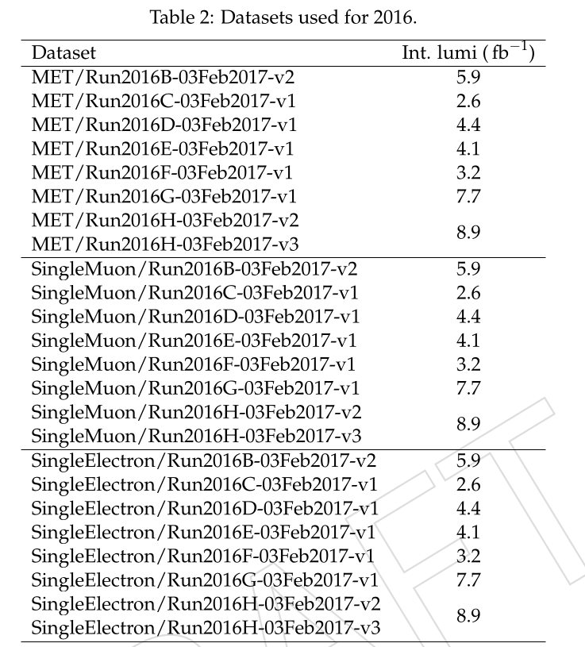
display(Image(filename="MC_data.png"))
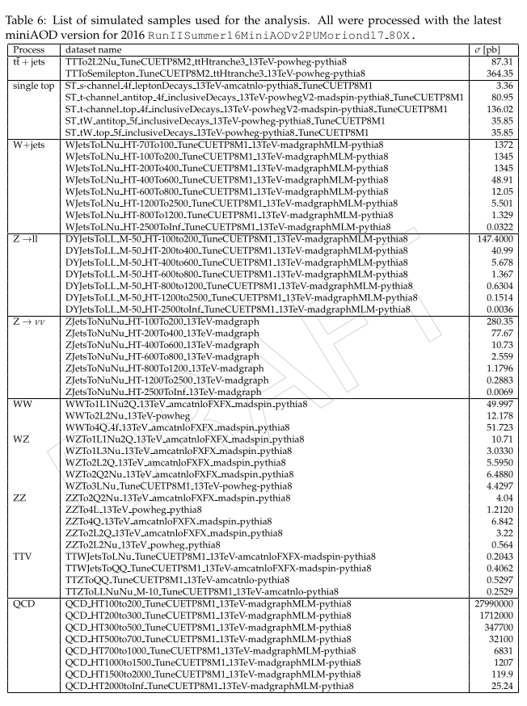
Download the essential files
The following code uses these utilities to access the location of the ROOT files of every dataset used in the analysis. We download and create a file with all the ROOT's urls for every dataset.
We assign a name similar to FILE_LIST_ttsemilep.txt to these files.
# Descarga de las direcciones root para cada grupo de datos
for datasetname in nanoaod_filenames.keys():
print(datasetname)
outfilename = f'FILE_LIST_{datasetname}.txt'
# Remove the file if it exists
try:
os.remove(outfilename)
except OSError:
pass
for url in nanoaod_filenames[datasetname]:
print(url)
r = requests.get(url, allow_redirects=True)
open(outfilename, 'a').write(r.text)
ttsemilep
https://opendata.cern.ch/record/67993/file_index/CMS_mc_RunIISummer20UL16NanoAODv9_TTToSemiLeptonic_TuneCP5_13TeV-powheg-pythia8_NANOAODSIM_106X_mcRun2_asymptotic_v17-v1_120000_file_index.txt
https://opendata.cern.ch/record/67993/file_index/CMS_mc_RunIISummer20UL16NanoAODv9_TTToSemiLeptonic_TuneCP5_13TeV-powheg-pythia8_NANOAODSIM_106X_mcRun2_asymptotic_v17-v1_130000_file_index.txt
https://opendata.cern.ch/record/67993/file_index/CMS_mc_RunIISummer20UL16NanoAODv9_TTToSemiLeptonic_TuneCP5_13TeV-powheg-pythia8_NANOAODSIM_106X_mcRun2_asymptotic_v17-v1_270000_file_index.txt
https://opendata.cern.ch/record/67993/file_index/CMS_mc_RunIISummer20UL16NanoAODv9_TTToSemiLeptonic_TuneCP5_13TeV-powheg-pythia8_NANOAODSIM_106X_mcRun2_asymptotic_v17-v1_280000_file_index.txt
https://opendata.cern.ch/record/67993/file_index/CMS_mc_RunIISummer20UL16NanoAODv9_TTToSemiLeptonic_TuneCP5_13TeV-powheg-pythia8_NANOAODSIM_106X_mcRun2_asymptotic_v17-v1_70000_file_index.txt
ttop
https://opendata.cern.ch/record/64763/file_index/CMS_mc_RunIISummer20UL16NanoAODv9_ST_t-channel_top_4f_InclusiveDecays_TuneCP5CR2_13TeV-powheg-madspin-pythia8_NANOAODSIM_106X_mcRun2_asymptotic_v17-v1_100000_file_index.txt
https://opendata.cern.ch/record/64763/file_index/CMS_mc_RunIISummer20UL16NanoAODv9_ST_t-channel_top_4f_InclusiveDecays_TuneCP5CR2_13TeV-powheg-madspin-pythia8_NANOAODSIM_106X_mcRun2_asymptotic_v17-v1_230000_file_index.txt
https://opendata.cern.ch/record/64763/file_index/CMS_mc_RunIISummer20UL16NanoAODv9_ST_t-channel_top_4f_InclusiveDecays_TuneCP5CR2_13TeV-powheg-madspin-pythia8_NANOAODSIM_106X_mcRun2_asymptotic_v17-v1_2430000_file_index.txt
https://opendata.cern.ch/record/64763/file_index/CMS_mc_RunIISummer20UL16NanoAODv9_ST_t-channel_top_4f_InclusiveDecays_TuneCP5CR2_13TeV-powheg-madspin-pythia8_NANOAODSIM_106X_mcRun2_asymptotic_v17-v1_2500000_file_index.txt
https://opendata.cern.ch/record/64763/file_index/CMS_mc_RunIISummer20UL16NanoAODv9_ST_t-channel_top_4f_InclusiveDecays_TuneCP5CR2_13TeV-powheg-madspin-pythia8_NANOAODSIM_106X_mcRun2_asymptotic_v17-v1_250000_file_index.txt
Wjets
https://opendata.cern.ch/record/69729/file_index/CMS_mc_RunIISummer20UL16NanoAODv9_WJetsToLNu_HT-400To600_TuneCP5_13TeV-madgraphMLM-pythia8_NANOAODSIM_106X_mcRun2_asymptotic_v17-v1_120000_file_index.txt
https://opendata.cern.ch/record/69729/file_index/CMS_mc_RunIISummer20UL16NanoAODv9_WJetsToLNu_HT-400To600_TuneCP5_13TeV-madgraphMLM-pythia8_NANOAODSIM_106X_mcRun2_asymptotic_v17-v1_130000_file_index.txt
https://opendata.cern.ch/record/69729/file_index/CMS_mc_RunIISummer20UL16NanoAODv9_WJetsToLNu_HT-400To600_TuneCP5_13TeV-madgraphMLM-pythia8_NANOAODSIM_106X_mcRun2_asymptotic_v17-v1_270000_file_index.txt
https://opendata.cern.ch/record/69729/file_index/CMS_mc_RunIISummer20UL16NanoAODv9_WJetsToLNu_HT-400To600_TuneCP5_13TeV-madgraphMLM-pythia8_NANOAODSIM_106X_mcRun2_asymptotic_v17-v1_280000_file_index.txt
https://opendata.cern.ch/record/69729/file_index/CMS_mc_RunIISummer20UL16NanoAODv9_WJetsToLNu_HT-400To600_TuneCP5_13TeV-madgraphMLM-pythia8_NANOAODSIM_106X_mcRun2_asymptotic_v17-v1_70000_file_index.txt
ttv
https://opendata.cern.ch/record/68073/file_index/CMS_mc_RunIISummer20UL16NanoAODv9_TTWJetsToLNu_TuneCP5_13TeV-amcatnloFXFX-madspin-pythia8_NANOAODSIM_106X_mcRun2_asymptotic_v17-v1_130000_file_index.txt
https://opendata.cern.ch/record/68073/file_index/CMS_mc_RunIISummer20UL16NanoAODv9_TTWJetsToLNu_TuneCP5_13TeV-amcatnloFXFX-madspin-pythia8_NANOAODSIM_106X_mcRun2_asymptotic_v17-v1_270000_file_index.txt
https://opendata.cern.ch/record/68073/file_index/CMS_mc_RunIISummer20UL16NanoAODv9_TTWJetsToLNu_TuneCP5_13TeV-amcatnloFXFX-madspin-pythia8_NANOAODSIM_106X_mcRun2_asymptotic_v17-v1_280000_file_index.txt
https://opendata.cern.ch/record/68073/file_index/CMS_mc_RunIISummer20UL16NanoAODv9_TTWJetsToLNu_TuneCP5_13TeV-amcatnloFXFX-madspin-pythia8_NANOAODSIM_106X_mcRun2_asymptotic_v17-v1_70000_file_index.txt
collmet
https://opendata.cern.ch/record/30559/file_index/CMS_Run2016H_MET_NANOAOD_UL2016_MiniAODv2_NanoAODv9-v1_120000_file_index.txt
https://opendata.cern.ch/record/30559/file_index/CMS_Run2016H_MET_NANOAOD_UL2016_MiniAODv2_NanoAODv9-v1_280000_file_index.txt
https://opendata.cern.ch/record/30559/file_index/CMS_Run2016H_MET_NANOAOD_UL2016_MiniAODv2_NanoAODv9-v1_70000_file_index.txt
collsm
https://opendata.cern.ch/record/30563/file_index/CMS_Run2016H_SingleMuon_NANOAOD_UL2016_MiniAODv2_NanoAODv9-v1_120000_file_index.txt
https://opendata.cern.ch/record/30563/file_index/CMS_Run2016H_SingleMuon_NANOAOD_UL2016_MiniAODv2_NanoAODv9-v1_1210000_file_index.txt
https://opendata.cern.ch/record/30563/file_index/CMS_Run2016H_SingleMuon_NANOAOD_UL2016_MiniAODv2_NanoAODv9-v1_130000_file_index.txt
https://opendata.cern.ch/record/30563/file_index/CMS_Run2016H_SingleMuon_NANOAOD_UL2016_MiniAODv2_NanoAODv9-v1_280000_file_index.txt
https://opendata.cern.ch/record/30563/file_index/CMS_Run2016H_SingleMuon_NANOAOD_UL2016_MiniAODv2_NanoAODv9-v1_70000_file_index.txt
collse
https://opendata.cern.ch/record/30562/file_index/CMS_Run2016H_SingleElectron_NANOAOD_UL2016_MiniAODv2_NanoAODv9-v1_120000_file_index.txt
https://opendata.cern.ch/record/30562/file_index/CMS_Run2016H_SingleElectron_NANOAOD_UL2016_MiniAODv2_NanoAODv9-v1_270000_file_index.txt
https://opendata.cern.ch/record/30562/file_index/CMS_Run2016H_SingleElectron_NANOAOD_UL2016_MiniAODv2_NanoAODv9-v1_280000_file_index.txt
https://opendata.cern.ch/record/30562/file_index/CMS_Run2016H_SingleElectron_NANOAOD_UL2016_MiniAODv2_NanoAODv9-v1_70000_file_index.txt
By running the next code we can count the number of ROOT files that are in every dataset.
!wc -l FILE_LIST_*.txt
11 FILE_LIST_Wjets.txt
32 FILE_LIST_collmet.txt
80 FILE_LIST_collse.txt
82 FILE_LIST_collsm.txt
25 FILE_LIST_ttop.txt
138 FILE_LIST_ttsemilep.txt
12 FILE_LIST_ttv.txt
380 total
Using the get_files_for_dataset function we can get n number of ROOT files of a dataset, in this case the ttsemilep dataset.
# Pick 2 tt̄ semileptonic files
filenames = get_files_for_dataset("ttsemilep",random=True, n=2)
for f in filenames:
print(f)
root://eospublic.cern.ch//eos/opendata/cms/mc/RunIISummer20UL16NanoAODv9/TTToSemiLeptonic_TuneCP5_13TeV-powheg-pythia8/NANOAODSIM/106X_mcRun2_asymptotic_v17-v1/270000/CBA39E34-6BAD-B740-AB89-ECD745490CE5.root
root://eospublic.cern.ch//eos/opendata/cms/mc/RunIISummer20UL16NanoAODv9/TTToSemiLeptonic_TuneCP5_13TeV-powheg-pythia8/NANOAODSIM/106X_mcRun2_asymptotic_v17-v1/70000/7C94DA4D-C0B5-8747-B6F8-E4903C610777.root
In order to work with the collisions datasets it is necesary to apply a luminosity filter which you can download running the next cell.
!wget https://opendata.cern.ch/record/14220/files/Cert_271036-284044_13TeV_Legacy2016_Collisions16_JSON.txt
--2025-10-02 21:34:08-- https://opendata.cern.ch/record/14220/files/Cert_271036-284044_13TeV_Legacy2016_Collisions16_JSON.txt
137.138.6.31, 2001:1458:201:8b::100:1c8rn.ch)...
connected. to opendata.cern.ch (opendata.cern.ch)|137.138.6.31|:443...
HTTP request sent, awaiting response... 200 OK
Length: 11686 (11K) [text/plain]
Saving to: ‘Cert_271036-284044_13TeV_Legacy2016_Collisions16_JSON.txt’
Cert_271036-284044_ 100%[===================>] 11.41K --.-KB/s in 0s
2025-10-02 21:34:09 (91.7 MB/s) - ‘Cert_271036-284044_13TeV_Legacy2016_Collisions16_JSON.txt’ saved [11686/11686]
Selecting the data
We will work with a random file from the ttsemilp dataset.
filename = filenames[0]
print(f"Opening...{filename}")
f = uproot.open(filename)
events = f['Events']
nevents = events.num_entries
print(f"{nevents = }")
Opening...root://eospublic.cern.ch//eos/opendata/cms/mc/RunIISummer20UL16NanoAODv9/TTToSemiLeptonic_TuneCP5_13TeV-powheg-pythia8/NANOAODSIM/106X_mcRun2_asymptotic_v17-v1/270000/CBA39E34-6BAD-B740-AB89-ECD745490CE5.root
nevents = 810000
We can see the keys with
print(events.keys())
['run', 'luminosityBlock', 'event', 'HTXS_Higgs_pt', 'HTXS_Higgs_y', 'HTXS_stage1_1_cat_pTjet25GeV', 'HTXS_stage1_1_cat_pTjet30GeV', 'HTXS_stage1_1_fine_cat_pTjet25GeV', 'HTXS_stage1_1_fine_cat_pTjet30GeV', 'HTXS_stage1_2_cat_pTjet25GeV', 'HTXS_stage1_2_cat_pTjet30GeV', 'HTXS_stage1_2_fine_cat_pTjet25GeV', 'HTXS_stage1_2_fine_cat_pTjet30GeV', 'HTXS_stage_0', 'HTXS_stage_1_pTjet25', 'HTXS_stage_1_pTjet30', 'HTXS_njets25', 'HTXS_njets30', 'nboostedTau', 'boostedTau_chargedIso', 'boostedTau_eta', 'boostedTau_leadTkDeltaEta', 'boostedTau_leadTkDeltaPhi', 'boostedTau_leadTkPtOverTauPt', 'boostedTau_mass', 'boostedTau_neutralIso', 'boostedTau_phi', 'boostedTau_photonsOutsideSignalCone', 'boostedTau_pt', 'boostedTau_puCorr', 'boostedTau_rawAntiEle2018', 'boostedTau_rawIso', 'boostedTau_rawIsodR03', 'boostedTau_rawMVAnewDM2017v2', 'boostedTau_rawMVAoldDM2017v2', 'boostedTau_rawMVAoldDMdR032017v2', 'boostedTau_charge', 'boostedTau_decayMode', 'boostedTau_jetIdx', 'boostedTau_rawAntiEleCat2018', 'boostedTau_idAntiEle2018', 'boostedTau_idAntiMu', 'boostedTau_idMVAnewDM2017v2', 'boostedTau_idMVAoldDM2017v2', 'boostedTau_idMVAoldDMdR032017v2', 'btagWeight_CSVV2', 'btagWeight_DeepCSVB', 'CaloMET_phi', 'CaloMET_pt', 'CaloMET_sumEt', 'ChsMET_phi', 'ChsMET_pt', 'ChsMET_sumEt', 'nCorrT1METJet', 'CorrT1METJet_area', 'CorrT1METJet_eta', 'CorrT1METJet_muonSubtrFactor', 'CorrT1METJet_phi', 'CorrT1METJet_rawPt', 'DeepMETResolutionTune_phi', 'DeepMETResolutionTune_pt', 'DeepMETResponseTune_phi', 'DeepMETResponseTune_pt', 'nElectron', 'Electron_dEscaleDown', 'Electron_dEscaleUp', 'Electron_dEsigmaDown', 'Electron_dEsigmaUp', 'Electron_deltaEtaSC', 'Electron_dr03EcalRecHitSumEt', 'Electron_dr03HcalDepth1TowerSumEt', 'Electron_dr03TkSumPt', 'Electron_dr03TkSumPtHEEP', 'Electron_dxy', 'Electron_dxyErr', 'Electron_dz', 'Electron_dzErr', 'Electron_eCorr', 'Electron_eInvMinusPInv', 'Electron_energyErr', 'Electron_eta', 'Electron_hoe', 'Electron_ip3d', 'Electron_jetPtRelv2', 'Electron_jetRelIso', 'Electron_mass', 'Electron_miniPFRelIso_all', 'Electron_miniPFRelIso_chg', 'Electron_mvaFall17V2Iso', 'Electron_mvaFall17V2noIso', 'Electron_pfRelIso03_all', 'Electron_pfRelIso03_chg', 'Electron_phi', 'Electron_pt', 'Electron_r9', 'Electron_scEtOverPt', 'Electron_sieie', 'Electron_sip3d', 'Electron_mvaTTH', 'Electron_charge', 'Electron_cutBased', 'Electron_jetIdx', 'Electron_pdgId', 'Electron_photonIdx', 'Electron_tightCharge', 'Electron_vidNestedWPBitmap', 'Electron_vidNestedWPBitmapHEEP', 'Electron_convVeto', 'Electron_cutBased_HEEP', 'Electron_isPFcand', 'Electron_jetNDauCharged', 'Electron_lostHits', 'Electron_mvaFall17V2Iso_WP80', 'Electron_mvaFall17V2Iso_WP90', 'Electron_mvaFall17V2Iso_WPL', 'Electron_mvaFall17V2noIso_WP80', 'Electron_mvaFall17V2noIso_WP90', 'Electron_mvaFall17V2noIso_WPL', 'Electron_seedGain', 'nFatJet', 'FatJet_area', 'FatJet_btagCSVV2', 'FatJet_btagDDBvLV2', 'FatJet_btagDDCvBV2', 'FatJet_btagDDCvLV2', 'FatJet_btagDeepB', 'FatJet_btagHbb', 'FatJet_deepTagMD_H4qvsQCD', 'FatJet_deepTagMD_HbbvsQCD', 'FatJet_deepTagMD_TvsQCD', 'FatJet_deepTagMD_WvsQCD', 'FatJet_deepTagMD_ZHbbvsQCD', 'FatJet_deepTagMD_ZHccvsQCD', 'FatJet_deepTagMD_ZbbvsQCD', 'FatJet_deepTagMD_ZvsQCD', 'FatJet_deepTagMD_bbvsLight', 'FatJet_deepTagMD_ccvsLight', 'FatJet_deepTag_H', 'FatJet_deepTag_QCD', 'FatJet_deepTag_QCDothers', 'FatJet_deepTag_TvsQCD', 'FatJet_deepTag_WvsQCD', 'FatJet_deepTag_ZvsQCD', 'FatJet_eta', 'FatJet_mass', 'FatJet_msoftdrop', 'FatJet_n2b1', 'FatJet_n3b1', 'FatJet_particleNetMD_QCD', 'FatJet_particleNetMD_Xbb', 'FatJet_particleNetMD_Xcc', 'FatJet_particleNetMD_Xqq', 'FatJet_particleNet_H4qvsQCD', 'FatJet_particleNet_HbbvsQCD', 'FatJet_particleNet_HccvsQCD', 'FatJet_particleNet_QCD', 'FatJet_particleNet_TvsQCD', 'FatJet_particleNet_WvsQCD', 'FatJet_particleNet_ZvsQCD', 'FatJet_particleNet_mass', 'FatJet_phi', 'FatJet_pt', 'FatJet_rawFactor', 'FatJet_tau1', 'FatJet_tau2', 'FatJet_tau3', 'FatJet_tau4', 'FatJet_lsf3', 'FatJet_jetId', 'FatJet_subJetIdx1', 'FatJet_subJetIdx2', 'FatJet_electronIdx3SJ', 'FatJet_muonIdx3SJ', 'FatJet_nConstituents', 'nFsrPhoton', 'FsrPhoton_dROverEt2', 'FsrPhoton_eta', 'FsrPhoton_phi', 'FsrPhoton_pt', 'FsrPhoton_relIso03', 'FsrPhoton_muonIdx', 'nGenJetAK8', 'GenJetAK8_eta', 'GenJetAK8_mass', 'GenJetAK8_phi', 'GenJetAK8_pt', 'nGenJet', 'GenJet_eta', 'GenJet_mass', 'GenJet_phi', 'GenJet_pt', 'nGenPart', 'GenPart_eta', 'GenPart_mass', 'GenPart_phi', 'GenPart_pt', 'GenPart_genPartIdxMother', 'GenPart_pdgId', 'GenPart_status', 'GenPart_statusFlags', 'nSubGenJetAK8', 'SubGenJetAK8_eta', 'SubGenJetAK8_mass', 'SubGenJetAK8_phi', 'SubGenJetAK8_pt', 'Generator_binvar', 'Generator_scalePDF', 'Generator_weight', 'Generator_x1', 'Generator_x2', 'Generator_xpdf1', 'Generator_xpdf2', 'Generator_id1', 'Generator_id2', 'GenVtx_x', 'GenVtx_y', 'GenVtx_z', 'nGenVisTau', 'GenVisTau_eta', 'GenVisTau_mass', 'GenVisTau_phi', 'GenVisTau_pt', 'GenVisTau_charge', 'GenVisTau_genPartIdxMother', 'GenVisTau_status', 'genWeight', 'LHEWeight_originalXWGTUP', 'nLHEPdfWeight', 'LHEPdfWeight', 'nLHEReweightingWeight', 'LHEReweightingWeight', 'nLHEScaleWeight', 'LHEScaleWeight', 'nPSWeight', 'PSWeight', 'nIsoTrack', 'IsoTrack_dxy', 'IsoTrack_dz', 'IsoTrack_eta', 'IsoTrack_pfRelIso03_all', 'IsoTrack_pfRelIso03_chg', 'IsoTrack_phi', 'IsoTrack_pt', 'IsoTrack_miniPFRelIso_all', 'IsoTrack_miniPFRelIso_chg', 'IsoTrack_charge', 'IsoTrack_fromPV', 'IsoTrack_pdgId', 'IsoTrack_isHighPurityTrack', 'IsoTrack_isPFcand', 'IsoTrack_isFromLostTrack', 'nJet', 'Jet_area', 'Jet_btagCSVV2', 'Jet_btagDeepB', 'Jet_btagDeepCvB', 'Jet_btagDeepCvL', 'Jet_btagDeepFlavB', 'Jet_btagDeepFlavCvB', 'Jet_btagDeepFlavCvL', 'Jet_btagDeepFlavQG', 'Jet_chEmEF', 'Jet_chFPV0EF', 'Jet_chHEF', 'Jet_eta', 'Jet_hfsigmaEtaEta', 'Jet_hfsigmaPhiPhi', 'Jet_mass', 'Jet_muEF', 'Jet_muonSubtrFactor', 'Jet_neEmEF', 'Jet_neHEF', 'Jet_phi', 'Jet_pt', 'Jet_puIdDisc', 'Jet_qgl', 'Jet_rawFactor', 'Jet_bRegCorr', 'Jet_bRegRes', 'Jet_cRegCorr', 'Jet_cRegRes', 'Jet_electronIdx1', 'Jet_electronIdx2', 'Jet_hfadjacentEtaStripsSize', 'Jet_hfcentralEtaStripSize', 'Jet_jetId', 'Jet_muonIdx1', 'Jet_muonIdx2', 'Jet_nElectrons', 'Jet_nMuons', 'Jet_puId', 'Jet_nConstituents', 'L1PreFiringWeight_Dn', 'L1PreFiringWeight_ECAL_Dn', 'L1PreFiringWeight_ECAL_Nom', 'L1PreFiringWeight_ECAL_Up', 'L1PreFiringWeight_Muon_Nom', 'L1PreFiringWeight_Muon_StatDn', 'L1PreFiringWeight_Muon_StatUp', 'L1PreFiringWeight_Muon_SystDn', 'L1PreFiringWeight_Muon_SystUp', 'L1PreFiringWeight_Nom', 'L1PreFiringWeight_Up', 'LHE_HT', 'LHE_HTIncoming', 'LHE_Vpt', 'LHE_AlphaS', 'LHE_Njets', 'LHE_Nb', 'LHE_Nc', 'LHE_Nuds', 'LHE_Nglu', 'LHE_NpNLO', 'LHE_NpLO', 'nLHEPart', 'LHEPart_pt', 'LHEPart_eta', 'LHEPart_phi', 'LHEPart_mass', 'LHEPart_incomingpz', 'LHEPart_pdgId', 'LHEPart_status', 'LHEPart_spin', 'nLowPtElectron', 'LowPtElectron_ID', 'LowPtElectron_convVtxRadius', 'LowPtElectron_deltaEtaSC', 'LowPtElectron_dxy', 'LowPtElectron_dxyErr', 'LowPtElectron_dz', 'LowPtElectron_dzErr', 'LowPtElectron_eInvMinusPInv', 'LowPtElectron_embeddedID', 'LowPtElectron_energyErr', 'LowPtElectron_eta', 'LowPtElectron_hoe', 'LowPtElectron_mass', 'LowPtElectron_miniPFRelIso_all', 'LowPtElectron_miniPFRelIso_chg', 'LowPtElectron_phi', 'LowPtElectron_pt', 'LowPtElectron_ptbiased', 'LowPtElectron_r9', 'LowPtElectron_scEtOverPt', 'LowPtElectron_sieie', 'LowPtElectron_unbiased', 'LowPtElectron_charge', 'LowPtElectron_convWP', 'LowPtElectron_pdgId', 'LowPtElectron_convVeto', 'LowPtElectron_lostHits', 'GenMET_phi', 'GenMET_pt', 'MET_MetUnclustEnUpDeltaX', 'MET_MetUnclustEnUpDeltaY', 'MET_covXX', 'MET_covXY', 'MET_covYY', 'MET_phi', 'MET_pt', 'MET_significance', 'MET_sumEt', 'MET_sumPtUnclustered', 'nMuon', 'Muon_dxy', 'Muon_dxyErr', 'Muon_dxybs', 'Muon_dz', 'Muon_dzErr', 'Muon_eta', 'Muon_ip3d', 'Muon_jetPtRelv2', 'Muon_jetRelIso', 'Muon_mass', 'Muon_miniPFRelIso_all', 'Muon_miniPFRelIso_chg', 'Muon_pfRelIso03_all', 'Muon_pfRelIso03_chg', 'Muon_pfRelIso04_all', 'Muon_phi', 'Muon_pt', 'Muon_ptErr', 'Muon_segmentComp', 'Muon_sip3d', 'Muon_softMva', 'Muon_tkRelIso', 'Muon_tunepRelPt', 'Muon_mvaLowPt', 'Muon_mvaTTH', 'Muon_charge', 'Muon_jetIdx', 'Muon_nStations', 'Muon_nTrackerLayers', 'Muon_pdgId', 'Muon_tightCharge', 'Muon_fsrPhotonIdx', 'Muon_highPtId', 'Muon_highPurity', 'Muon_inTimeMuon', 'Muon_isGlobal', 'Muon_isPFcand', 'Muon_isStandalone', 'Muon_isTracker', 'Muon_jetNDauCharged', 'Muon_looseId', 'Muon_mediumId', 'Muon_mediumPromptId', 'Muon_miniIsoId', 'Muon_multiIsoId', 'Muon_mvaId', 'Muon_mvaLowPtId', 'Muon_pfIsoId', 'Muon_puppiIsoId', 'Muon_softId', 'Muon_softMvaId', 'Muon_tightId', 'Muon_tkIsoId', 'Muon_triggerIdLoose', 'nPhoton', 'Photon_dEscaleDown', 'Photon_dEscaleUp', 'Photon_dEsigmaDown', 'Photon_dEsigmaUp', 'Photon_eCorr', 'Photon_energyErr', 'Photon_eta', 'Photon_hoe', 'Photon_mass', 'Photon_mvaID', 'Photon_mvaID_Fall17V1p1', 'Photon_pfRelIso03_all', 'Photon_pfRelIso03_chg', 'Photon_phi', 'Photon_pt', 'Photon_r9', 'Photon_sieie', 'Photon_charge', 'Photon_cutBased', 'Photon_cutBased_Fall17V1Bitmap', 'Photon_electronIdx', 'Photon_jetIdx', 'Photon_pdgId', 'Photon_vidNestedWPBitmap', 'Photon_electronVeto', 'Photon_isScEtaEB', 'Photon_isScEtaEE', 'Photon_mvaID_WP80', 'Photon_mvaID_WP90', 'Photon_pixelSeed', 'Photon_seedGain', 'Pileup_nTrueInt', 'Pileup_pudensity', 'Pileup_gpudensity', 'Pileup_nPU', 'Pileup_sumEOOT', 'Pileup_sumLOOT', 'PuppiMET_phi', 'PuppiMET_phiJERDown', 'PuppiMET_phiJERUp', 'PuppiMET_phiJESDown', 'PuppiMET_phiJESUp', 'PuppiMET_phiUnclusteredDown', 'PuppiMET_phiUnclusteredUp', 'PuppiMET_pt', 'PuppiMET_ptJERDown', 'PuppiMET_ptJERUp', 'PuppiMET_ptJESDown', 'PuppiMET_ptJESUp', 'PuppiMET_ptUnclusteredDown', 'PuppiMET_ptUnclusteredUp', 'PuppiMET_sumEt', 'RawMET_phi', 'RawMET_pt', 'RawMET_sumEt', 'RawPuppiMET_phi', 'RawPuppiMET_pt', 'RawPuppiMET_sumEt', 'fixedGridRhoFastjetAll', 'fixedGridRhoFastjetCentral', 'fixedGridRhoFastjetCentralCalo', 'fixedGridRhoFastjetCentralChargedPileUp', 'fixedGridRhoFastjetCentralNeutral', 'nGenDressedLepton', 'GenDressedLepton_eta', 'GenDressedLepton_mass', 'GenDressedLepton_phi', 'GenDressedLepton_pt', 'GenDressedLepton_pdgId', 'GenDressedLepton_hasTauAnc', 'nGenIsolatedPhoton', 'GenIsolatedPhoton_eta', 'GenIsolatedPhoton_mass', 'GenIsolatedPhoton_phi', 'GenIsolatedPhoton_pt', 'nSoftActivityJet', 'SoftActivityJet_eta', 'SoftActivityJet_phi', 'SoftActivityJet_pt', 'SoftActivityJetHT', 'SoftActivityJetHT10', 'SoftActivityJetHT2', 'SoftActivityJetHT5', 'SoftActivityJetNjets10', 'SoftActivityJetNjets2', 'SoftActivityJetNjets5', 'nSubJet', 'SubJet_btagCSVV2', 'SubJet_btagDeepB', 'SubJet_eta', 'SubJet_mass', 'SubJet_n2b1', 'SubJet_n3b1', 'SubJet_phi', 'SubJet_pt', 'SubJet_rawFactor', 'SubJet_tau1', 'SubJet_tau2', 'SubJet_tau3', 'SubJet_tau4', 'nTau', 'Tau_chargedIso', 'Tau_dxy', 'Tau_dz', 'Tau_eta', 'Tau_leadTkDeltaEta', 'Tau_leadTkDeltaPhi', 'Tau_leadTkPtOverTauPt', 'Tau_mass', 'Tau_neutralIso', 'Tau_phi', 'Tau_photonsOutsideSignalCone', 'Tau_pt', 'Tau_puCorr', 'Tau_rawDeepTau2017v2p1VSe', 'Tau_rawDeepTau2017v2p1VSjet', 'Tau_rawDeepTau2017v2p1VSmu', 'Tau_rawIso', 'Tau_rawIsodR03', 'Tau_charge', 'Tau_decayMode', 'Tau_jetIdx', 'Tau_idAntiEleDeadECal', 'Tau_idAntiMu', 'Tau_idDecayModeOldDMs', 'Tau_idDeepTau2017v2p1VSe', 'Tau_idDeepTau2017v2p1VSjet', 'Tau_idDeepTau2017v2p1VSmu', 'TkMET_phi', 'TkMET_pt', 'TkMET_sumEt', 'nTrigObj', 'TrigObj_pt', 'TrigObj_eta', 'TrigObj_phi', 'TrigObj_l1pt', 'TrigObj_l1pt_2', 'TrigObj_l2pt', 'TrigObj_id', 'TrigObj_l1iso', 'TrigObj_l1charge', 'TrigObj_filterBits', 'genTtbarId', 'nOtherPV', 'OtherPV_z', 'PV_ndof', 'PV_x', 'PV_y', 'PV_z', 'PV_chi2', 'PV_score', 'PV_npvs', 'PV_npvsGood', 'nSV', 'SV_dlen', 'SV_dlenSig', 'SV_dxy', 'SV_dxySig', 'SV_pAngle', 'SV_charge', 'boostedTau_genPartIdx', 'boostedTau_genPartFlav', 'Electron_genPartIdx', 'Electron_genPartFlav', 'FatJet_genJetAK8Idx', 'FatJet_hadronFlavour', 'FatJet_nBHadrons', 'FatJet_nCHadrons', 'GenJetAK8_partonFlavour', 'GenJetAK8_hadronFlavour', 'GenJet_partonFlavour', 'GenJet_hadronFlavour', 'GenVtx_t0', 'Jet_genJetIdx', 'Jet_hadronFlavour', 'Jet_partonFlavour', 'LowPtElectron_genPartIdx', 'LowPtElectron_genPartFlav', 'Muon_genPartIdx', 'Muon_genPartFlav', 'Photon_genPartIdx', 'Photon_genPartFlav', 'MET_fiducialGenPhi', 'MET_fiducialGenPt', 'Electron_cleanmask', 'Jet_cleanmask', 'Muon_cleanmask', 'Photon_cleanmask', 'Tau_cleanmask', 'SubJet_hadronFlavour', 'SubJet_nBHadrons', 'SubJet_nCHadrons', 'SV_chi2', 'SV_eta', 'SV_mass', 'SV_ndof', 'SV_phi', 'SV_pt', 'SV_x', 'SV_y', 'SV_z', 'SV_ntracks', 'Tau_genPartIdx', 'Tau_genPartFlav', 'L1_AlwaysTrue', 'L1_BRIL_TRIG0_AND', 'L1_BRIL_TRIG0_FstBunchInTrain', 'L1_BRIL_TRIG0_OR', 'L1_BRIL_TRIG0_delayedAND', 'L1_BeamGasB1', 'L1_BeamGasB2', 'L1_BeamGasMinus', 'L1_BeamGasPlus', 'L1_BptxMinus', 'L1_BptxOR', 'L1_BptxPlus', 'L1_BptxXOR', 'L1_DoubleEG6_HTT255', 'L1_DoubleEG_15_10', 'L1_DoubleEG_18_17', 'L1_DoubleEG_20_18', 'L1_DoubleEG_22_10', 'L1_DoubleEG_22_12', 'L1_DoubleEG_22_15', 'L1_DoubleEG_23_10', 'L1_DoubleEG_24_17', 'L1_DoubleEG_25_12', 'L1_DoubleIsoTau28er', 'L1_DoubleIsoTau30er', 'L1_DoubleIsoTau32er', 'L1_DoubleIsoTau33er', 'L1_DoubleIsoTau34er', 'L1_DoubleIsoTau35er', 'L1_DoubleIsoTau36er', 'L1_DoubleJet12_ForwardBackward', 'L1_DoubleJet16_ForwardBackward', 'L1_DoubleJet8_ForwardBackward', 'L1_DoubleJetC100', 'L1_DoubleJetC112', 'L1_DoubleJetC120', 'L1_DoubleJetC40', 'L1_DoubleJetC50', 'L1_DoubleJetC60', 'L1_DoubleJetC60_ETM60', 'L1_DoubleJetC80', 'L1_DoubleMu0', 'L1_DoubleMu0_ETM40', 'L1_DoubleMu0_ETM55', 'L1_DoubleMu0er1p4_dEta_Max1p8_OS', 'L1_DoubleMu0er1p6_dEta_Max1p8', 'L1_DoubleMu0er1p6_dEta_Max1p8_OS', 'L1_DoubleMu7_EG14', 'L1_DoubleMu7_EG7', 'L1_DoubleMuOpen', 'L1_DoubleMu_10_0_dEta_Max1p8', 'L1_DoubleMu_10_3p5', 'L1_DoubleMu_10_Open', 'L1_DoubleMu_11_4', 'L1_DoubleMu_12_5', 'L1_DoubleMu_12_8', 'L1_DoubleMu_13_6', 'L1_DoubleMu_15_5', 'L1_DoubleTau50er', 'L1_EG25er_HTT125', 'L1_EG27er_HTT200', 'L1_ETM100', 'L1_ETM120', 'L1_ETM30', 'L1_ETM40', 'L1_ETM50', 'L1_ETM60', 'L1_ETM70', 'L1_ETM75', 'L1_ETM75_Jet60_dPhi_Min0p4', 'L1_ETM80', 'L1_ETM85', 'L1_ETM90', 'L1_ETM95', 'L1_ETT25', 'L1_ETT35_BptxAND', 'L1_ETT40_BptxAND', 'L1_ETT50_BptxAND', 'L1_ETT60_BptxAND', 'L1_FirstBunchAfterTrain', 'L1_FirstBunchInTrain', 'L1_HTM100', 'L1_HTM120', 'L1_HTM130', 'L1_HTM140', 'L1_HTM150', 'L1_HTM50', 'L1_HTM60_HTT260', 'L1_HTM70', 'L1_HTM80', 'L1_HTM80_HTT220', 'L1_HTT120', 'L1_HTT160', 'L1_HTT200', 'L1_HTT220', 'L1_HTT240', 'L1_HTT255', 'L1_HTT270', 'L1_HTT280', 'L1_HTT300', 'L1_HTT320', 'L1_IsoEG18er_IsoTau24er_dEta_Min0p2', 'L1_IsoEG20er_IsoTau25er_dEta_Min0p2', 'L1_IsoEG22er_IsoTau26er_dEta_Min0p2', 'L1_IsoEG22er_Tau20er_dEta_Min0p2', 'L1_IsolatedBunch', 'L1_Jet32_DoubleMu_10_0_dPhi_Jet_Mu0_Max0p4_dPhi_Mu_Mu_Min1p0', 'L1_Jet32_Mu0_EG10_dPhi_Jet_Mu_Max0p4_dPhi_Mu_EG_Min1p0', 'L1_MU20_EG15', 'L1_MinimumBiasHF0_AND', 'L1_MinimumBiasHF0_AND_BptxAND', 'L1_MinimumBiasHF0_OR', 'L1_MinimumBiasHF0_OR_BptxAND', 'L1_MinimumBiasHF1_AND', 'L1_MinimumBiasHF1_AND_BptxAND', 'L1_MinimumBiasHF1_OR', 'L1_MinimumBiasHF1_OR_BptxAND', 'L1_Mu0er_ETM40', 'L1_Mu0er_ETM55', 'L1_Mu10er_ETM30', 'L1_Mu10er_ETM50', 'L1_Mu12_EG10', 'L1_Mu14er_ETM30', 'L1_Mu16er_Tau20er', 'L1_Mu16er_Tau24er', 'L1_Mu18er_IsoTau26er', 'L1_Mu18er_Tau20er', 'L1_Mu18er_Tau24er', 'L1_Mu20_EG10', 'L1_Mu20_EG17', 'L1_Mu20_IsoEG6', 'L1_Mu20er_IsoTau26er', 'L1_Mu22er_IsoTau26er', 'L1_Mu23_EG10', 'L1_Mu23_IsoEG10', 'L1_Mu25er_IsoTau26er', 'L1_Mu3_JetC120', 'L1_Mu3_JetC120_dEta_Max0p4_dPhi_Max0p4', 'L1_Mu3_JetC16', 'L1_Mu3_JetC16_dEta_Max0p4_dPhi_Max0p4', 'L1_Mu3_JetC60', 'L1_Mu3_JetC60_dEta_Max0p4_dPhi_Max0p4', 'L1_Mu5_EG15', 'L1_Mu5_EG20', 'L1_Mu5_EG23', 'L1_Mu5_IsoEG18', 'L1_Mu5_IsoEG20', 'L1_Mu6_DoubleEG10', 'L1_Mu6_DoubleEG17', 'L1_Mu6_HTT200', 'L1_Mu8_HTT150', 'L1_NotBptxOR', 'L1_QuadJetC36_Tau52', 'L1_QuadJetC40', 'L1_QuadJetC50', 'L1_QuadJetC60', 'L1_QuadMu0', 'L1_SingleEG10', 'L1_SingleEG15', 'L1_SingleEG18', 'L1_SingleEG24', 'L1_SingleEG26', 'L1_SingleEG28', 'L1_SingleEG2_BptxAND', 'L1_SingleEG30', 'L1_SingleEG32', 'L1_SingleEG34', 'L1_SingleEG36', 'L1_SingleEG38', 'L1_SingleEG40', 'L1_SingleEG45', 'L1_SingleEG5', 'L1_SingleIsoEG18', 'L1_SingleIsoEG18er', 'L1_SingleIsoEG20', 'L1_SingleIsoEG20er', 'L1_SingleIsoEG22', 'L1_SingleIsoEG22er', 'L1_SingleIsoEG24', 'L1_SingleIsoEG24er', 'L1_SingleIsoEG26', 'L1_SingleIsoEG26er', 'L1_SingleIsoEG28', 'L1_SingleIsoEG28er', 'L1_SingleIsoEG30', 'L1_SingleIsoEG30er', 'L1_SingleIsoEG32', 'L1_SingleIsoEG32er', 'L1_SingleIsoEG34', 'L1_SingleIsoEG34er', 'L1_SingleIsoEG36', 'L1_SingleJet120', 'L1_SingleJet12_BptxAND', 'L1_SingleJet140', 'L1_SingleJet150', 'L1_SingleJet16', 'L1_SingleJet160', 'L1_SingleJet170', 'L1_SingleJet180', 'L1_SingleJet20', 'L1_SingleJet200', 'L1_SingleJet35', 'L1_SingleJet60', 'L1_SingleJet8_BptxAND', 'L1_SingleJet90', 'L1_SingleJetC20_NotBptxOR', 'L1_SingleJetC20_NotBptxOR_3BX', 'L1_SingleJetC32_NotBptxOR', 'L1_SingleJetC32_NotBptxOR_3BX', 'L1_SingleJetC36_NotBptxOR_3BX', 'L1_SingleMu10_LowQ', 'L1_SingleMu12', 'L1_SingleMu14', 'L1_SingleMu14er', 'L1_SingleMu16', 'L1_SingleMu16er', 'L1_SingleMu18', 'L1_SingleMu18er', 'L1_SingleMu20', 'L1_SingleMu20er', 'L1_SingleMu22', 'L1_SingleMu22er', 'L1_SingleMu25', 'L1_SingleMu25er', 'L1_SingleMu3', 'L1_SingleMu30', 'L1_SingleMu30er', 'L1_SingleMu5', 'L1_SingleMu7', 'L1_SingleMuCosmics', 'L1_SingleMuOpen', 'L1_SingleMuOpen_NotBptxOR', 'L1_SingleMuOpen_NotBptxOR_3BX', 'L1_SingleTau100er', 'L1_SingleTau120er', 'L1_SingleTau80er', 'L1_TripleEG_14_10_8', 'L1_TripleEG_18_17_8', 'L1_TripleJet_84_68_48_VBF', 'L1_TripleJet_88_72_56_VBF', 'L1_TripleJet_92_76_64_VBF', 'L1_TripleMu0', 'L1_TripleMu_5_0_0', 'L1_TripleMu_5_5_3', 'L1_ZeroBias', 'L1_ZeroBias_FirstCollidingBunch', 'L1_ZeroBias_copy', 'L1_UnprefireableEvent', 'Flag_HBHENoiseFilter', 'Flag_HBHENoiseIsoFilter', 'Flag_CSCTightHaloFilter', 'Flag_CSCTightHaloTrkMuUnvetoFilter', 'Flag_CSCTightHalo2015Filter', 'Flag_globalTightHalo2016Filter', 'Flag_globalSuperTightHalo2016Filter', 'Flag_HcalStripHaloFilter', 'Flag_hcalLaserEventFilter', 'Flag_EcalDeadCellTriggerPrimitiveFilter', 'Flag_EcalDeadCellBoundaryEnergyFilter', 'Flag_ecalBadCalibFilter', 'Flag_goodVertices', 'Flag_eeBadScFilter', 'Flag_ecalLaserCorrFilter', 'Flag_trkPOGFilters', 'Flag_chargedHadronTrackResolutionFilter', 'Flag_muonBadTrackFilter', 'Flag_BadChargedCandidateFilter', 'Flag_BadPFMuonFilter', 'Flag_BadPFMuonDzFilter', 'Flag_hfNoisyHitsFilter', 'Flag_BadChargedCandidateSummer16Filter', 'Flag_BadPFMuonSummer16Filter', 'Flag_trkPOG_manystripclus53X', 'Flag_trkPOG_toomanystripclus53X', 'Flag_trkPOG_logErrorTooManyClusters', 'Flag_METFilters', 'L1Reco_step', 'HLTriggerFirstPath', 'HLT_AK8PFJet360_TrimMass30', 'HLT_AK8PFJet400_TrimMass30', 'HLT_AK8PFHT750_TrimMass50', 'HLT_AK8PFHT800_TrimMass50', 'HLT_AK8DiPFJet300_200_TrimMass30_BTagCSV_p20', 'HLT_AK8DiPFJet280_200_TrimMass30_BTagCSV_p087', 'HLT_AK8DiPFJet300_200_TrimMass30_BTagCSV_p087', 'HLT_AK8DiPFJet300_200_TrimMass30', 'HLT_AK8PFHT700_TrimR0p1PT0p03Mass50', 'HLT_AK8PFHT650_TrimR0p1PT0p03Mass50', 'HLT_AK8PFHT600_TrimR0p1PT0p03Mass50_BTagCSV_p20', 'HLT_AK8DiPFJet280_200_TrimMass30', 'HLT_AK8DiPFJet250_200_TrimMass30', 'HLT_AK8DiPFJet280_200_TrimMass30_BTagCSV_p20', 'HLT_AK8DiPFJet250_200_TrimMass30_BTagCSV_p20', 'HLT_CaloJet260', 'HLT_CaloJet500_NoJetID', 'HLT_Dimuon13_PsiPrime', 'HLT_Dimuon13_Upsilon', 'HLT_Dimuon20_Jpsi', 'HLT_DoubleEle24_22_eta2p1_WPLoose_Gsf', 'HLT_DoubleEle25_CaloIdL_GsfTrkIdVL', 'HLT_DoubleEle33_CaloIdL', 'HLT_DoubleEle33_CaloIdL_MW', 'HLT_DoubleEle33_CaloIdL_GsfTrkIdVL_MW', 'HLT_DoubleEle33_CaloIdL_GsfTrkIdVL', 'HLT_DoubleMediumCombinedIsoPFTau35_Trk1_eta2p1_Reg', 'HLT_DoubleTightCombinedIsoPFTau35_Trk1_eta2p1_Reg', 'HLT_DoubleMediumCombinedIsoPFTau40_Trk1_eta2p1_Reg', 'HLT_DoubleTightCombinedIsoPFTau40_Trk1_eta2p1_Reg', 'HLT_DoubleMediumCombinedIsoPFTau40_Trk1_eta2p1', 'HLT_DoubleTightCombinedIsoPFTau40_Trk1_eta2p1', 'HLT_DoubleMediumIsoPFTau35_Trk1_eta2p1_Reg', 'HLT_DoubleMediumIsoPFTau40_Trk1_eta2p1_Reg', 'HLT_DoubleMediumIsoPFTau40_Trk1_eta2p1', 'HLT_DoubleEle37_Ele27_CaloIdL_GsfTrkIdVL', 'HLT_DoubleMu33NoFiltersNoVtx', 'HLT_DoubleMu38NoFiltersNoVtx', 'HLT_DoubleMu23NoFiltersNoVtxDisplaced', 'HLT_DoubleMu28NoFiltersNoVtxDisplaced', 'HLT_DoubleMu0', 'HLT_DoubleMu4_3_Bs', 'HLT_DoubleMu4_3_Jpsi_Displaced', 'HLT_DoubleMu4_JpsiTrk_Displaced', 'HLT_DoubleMu4_LowMassNonResonantTrk_Displaced', 'HLT_DoubleMu3_Trk_Tau3mu', 'HLT_DoubleMu4_PsiPrimeTrk_Displaced', 'HLT_Mu7p5_L2Mu2_Jpsi', 'HLT_Mu7p5_L2Mu2_Upsilon', 'HLT_Mu7p5_Track2_Jpsi', 'HLT_Mu7p5_Track3p5_Jpsi', 'HLT_Mu7p5_Track7_Jpsi', 'HLT_Mu7p5_Track2_Upsilon', 'HLT_Mu7p5_Track3p5_Upsilon', 'HLT_Mu7p5_Track7_Upsilon', 'HLT_Dimuon0er16_Jpsi_NoOS_NoVertexing', 'HLT_Dimuon0er16_Jpsi_NoVertexing', 'HLT_Dimuon6_Jpsi_NoVertexing', 'HLT_Photon150', 'HLT_Photon90_CaloIdL_HT300', 'HLT_HT250_CaloMET70', 'HLT_DoublePhoton60', 'HLT_DoublePhoton85', 'HLT_Ele17_Ele8_Gsf', 'HLT_Ele20_eta2p1_WPLoose_Gsf_LooseIsoPFTau28', 'HLT_Ele22_eta2p1_WPLoose_Gsf_LooseIsoPFTau29', 'HLT_Ele22_eta2p1_WPLoose_Gsf', 'HLT_Ele22_eta2p1_WPLoose_Gsf_LooseIsoPFTau20_SingleL1', 'HLT_Ele23_WPLoose_Gsf', 'HLT_Ele23_WPLoose_Gsf_WHbbBoost', 'HLT_Ele24_eta2p1_WPLoose_Gsf', 'HLT_Ele24_eta2p1_WPLoose_Gsf_LooseIsoPFTau20', 'HLT_Ele24_eta2p1_WPLoose_Gsf_LooseIsoPFTau20_SingleL1', 'HLT_Ele24_eta2p1_WPLoose_Gsf_LooseIsoPFTau30', 'HLT_Ele25_WPTight_Gsf', 'HLT_Ele25_eta2p1_WPLoose_Gsf', 'HLT_Ele25_eta2p1_WPTight_Gsf', 'HLT_Ele27_WPLoose_Gsf', 'HLT_Ele27_WPLoose_Gsf_WHbbBoost', 'HLT_Ele27_WPTight_Gsf', 'HLT_Ele27_WPTight_Gsf_L1JetTauSeeded', 'HLT_Ele27_eta2p1_WPLoose_Gsf', 'HLT_Ele27_eta2p1_WPLoose_Gsf_LooseIsoPFTau20_SingleL1', 'HLT_Ele27_eta2p1_WPTight_Gsf', 'HLT_Ele30_WPTight_Gsf', 'HLT_Ele30_eta2p1_WPLoose_Gsf', 'HLT_Ele30_eta2p1_WPTight_Gsf', 'HLT_Ele32_WPTight_Gsf', 'HLT_Ele32_eta2p1_WPLoose_Gsf', 'HLT_Ele32_eta2p1_WPLoose_Gsf_LooseIsoPFTau20_SingleL1', 'HLT_Ele32_eta2p1_WPTight_Gsf', 'HLT_Ele35_WPLoose_Gsf', 'HLT_Ele35_CaloIdVT_GsfTrkIdT_PFJet150_PFJet50', 'HLT_Ele36_eta2p1_WPLoose_Gsf_LooseIsoPFTau20_SingleL1', 'HLT_Ele45_WPLoose_Gsf', 'HLT_Ele45_WPLoose_Gsf_L1JetTauSeeded', 'HLT_Ele45_CaloIdVT_GsfTrkIdT_PFJet200_PFJet50', 'HLT_Ele105_CaloIdVT_GsfTrkIdT', 'HLT_Ele30WP60_SC4_Mass55', 'HLT_Ele30WP60_Ele8_Mass55', 'HLT_HT200', 'HLT_HT275', 'HLT_HT325', 'HLT_HT425', 'HLT_HT575', 'HLT_HT410to430', 'HLT_HT430to450', 'HLT_HT450to470', 'HLT_HT470to500', 'HLT_HT500to550', 'HLT_HT550to650', 'HLT_HT650', 'HLT_Mu16_eta2p1_MET30', 'HLT_IsoMu16_eta2p1_MET30', 'HLT_IsoMu16_eta2p1_MET30_LooseIsoPFTau50_Trk30_eta2p1', 'HLT_IsoMu17_eta2p1', 'HLT_IsoMu17_eta2p1_LooseIsoPFTau20', 'HLT_IsoMu17_eta2p1_LooseIsoPFTau20_SingleL1', 'HLT_DoubleIsoMu17_eta2p1', 'HLT_DoubleIsoMu17_eta2p1_noDzCut', 'HLT_IsoMu18', 'HLT_IsoMu19_eta2p1_LooseIsoPFTau20', 'HLT_IsoMu19_eta2p1_LooseIsoPFTau20_SingleL1', 'HLT_IsoMu19_eta2p1_MediumIsoPFTau32_Trk1_eta2p1_Reg', 'HLT_IsoMu19_eta2p1_LooseCombinedIsoPFTau20', 'HLT_IsoMu19_eta2p1_MediumCombinedIsoPFTau32_Trk1_eta2p1_Reg', 'HLT_IsoMu19_eta2p1_TightCombinedIsoPFTau32_Trk1_eta2p1_Reg', 'HLT_IsoMu21_eta2p1_MediumCombinedIsoPFTau32_Trk1_eta2p1_Reg', 'HLT_IsoMu21_eta2p1_TightCombinedIsoPFTau32_Trk1_eta2p1_Reg', 'HLT_IsoMu20', 'HLT_IsoMu21_eta2p1_LooseIsoPFTau20_SingleL1', 'HLT_IsoMu21_eta2p1_LooseIsoPFTau50_Trk30_eta2p1_SingleL1', 'HLT_IsoMu21_eta2p1_MediumIsoPFTau32_Trk1_eta2p1_Reg', 'HLT_IsoMu22', 'HLT_IsoMu22_eta2p1', 'HLT_IsoMu24', 'HLT_IsoMu27', 'HLT_IsoTkMu18', 'HLT_IsoTkMu20', 'HLT_IsoTkMu22', 'HLT_IsoTkMu22_eta2p1', 'HLT_IsoTkMu24', 'HLT_IsoTkMu27', 'HLT_JetE30_NoBPTX3BX', 'HLT_JetE30_NoBPTX', 'HLT_JetE50_NoBPTX3BX', 'HLT_JetE70_NoBPTX3BX', 'HLT_L1SingleMu18', 'HLT_L2Mu10', 'HLT_L1SingleMuOpen', 'HLT_L1SingleMuOpen_DT', 'HLT_L2DoubleMu23_NoVertex', 'HLT_L2DoubleMu28_NoVertex_2Cha_Angle2p5_Mass10', 'HLT_L2DoubleMu38_NoVertex_2Cha_Angle2p5_Mass10', 'HLT_L2Mu10_NoVertex_NoBPTX3BX', 'HLT_L2Mu10_NoVertex_NoBPTX', 'HLT_L2Mu45_NoVertex_3Sta_NoBPTX3BX', 'HLT_L2Mu40_NoVertex_3Sta_NoBPTX3BX', 'HLT_LooseIsoPFTau50_Trk30_eta2p1', 'HLT_LooseIsoPFTau50_Trk30_eta2p1_MET80', 'HLT_LooseIsoPFTau50_Trk30_eta2p1_MET90', 'HLT_LooseIsoPFTau50_Trk30_eta2p1_MET110', 'HLT_LooseIsoPFTau50_Trk30_eta2p1_MET120', 'HLT_PFTau120_eta2p1', 'HLT_PFTau140_eta2p1', 'HLT_VLooseIsoPFTau120_Trk50_eta2p1', 'HLT_VLooseIsoPFTau140_Trk50_eta2p1', 'HLT_Mu17_Mu8', 'HLT_Mu17_Mu8_DZ', 'HLT_Mu17_Mu8_SameSign', 'HLT_Mu17_Mu8_SameSign_DZ', 'HLT_Mu20_Mu10', 'HLT_Mu20_Mu10_DZ', 'HLT_Mu20_Mu10_SameSign', 'HLT_Mu20_Mu10_SameSign_DZ', 'HLT_Mu17_TkMu8_DZ', 'HLT_Mu17_TrkIsoVVL_Mu8_TrkIsoVVL', 'HLT_Mu17_TrkIsoVVL_Mu8_TrkIsoVVL_DZ', 'HLT_Mu17_TrkIsoVVL_TkMu8_TrkIsoVVL', 'HLT_Mu17_TrkIsoVVL_TkMu8_TrkIsoVVL_DZ', 'HLT_Mu25_TkMu0_dEta18_Onia', 'HLT_Mu27_TkMu8', 'HLT_Mu30_TkMu11', 'HLT_Mu30_eta2p1_PFJet150_PFJet50', 'HLT_Mu40_TkMu11', 'HLT_Mu40_eta2p1_PFJet200_PFJet50', 'HLT_Mu20', 'HLT_TkMu17', 'HLT_TkMu17_TrkIsoVVL_TkMu8_TrkIsoVVL', 'HLT_TkMu17_TrkIsoVVL_TkMu8_TrkIsoVVL_DZ', 'HLT_TkMu20', 'HLT_Mu24_eta2p1', 'HLT_TkMu24_eta2p1', 'HLT_Mu27', 'HLT_TkMu27', 'HLT_Mu45_eta2p1', 'HLT_Mu50', 'HLT_TkMu50', 'HLT_Mu38NoFiltersNoVtx_Photon38_CaloIdL', 'HLT_Mu42NoFiltersNoVtx_Photon42_CaloIdL', 'HLT_Mu28NoFiltersNoVtxDisplaced_Photon28_CaloIdL', 'HLT_Mu33NoFiltersNoVtxDisplaced_Photon33_CaloIdL', 'HLT_Mu23NoFiltersNoVtx_Photon23_CaloIdL', 'HLT_DoubleMu18NoFiltersNoVtx', 'HLT_Mu33NoFiltersNoVtxDisplaced_DisplacedJet50_Tight', 'HLT_Mu33NoFiltersNoVtxDisplaced_DisplacedJet50_Loose', 'HLT_Mu28NoFiltersNoVtx_DisplacedJet40_Loose', 'HLT_Mu38NoFiltersNoVtxDisplaced_DisplacedJet60_Tight', 'HLT_Mu38NoFiltersNoVtxDisplaced_DisplacedJet60_Loose', 'HLT_Mu38NoFiltersNoVtx_DisplacedJet60_Loose', 'HLT_Mu28NoFiltersNoVtx_CentralCaloJet40', 'HLT_PFHT300_PFMET100', 'HLT_PFHT300_PFMET110', 'HLT_PFHT550_4JetPt50', 'HLT_PFHT650_4JetPt50', 'HLT_PFHT750_4JetPt50', 'HLT_PFHT750_4JetPt70', 'HLT_PFHT750_4JetPt80', 'HLT_PFHT800_4JetPt50', 'HLT_PFHT850_4JetPt50', 'HLT_PFJet15_NoCaloMatched', 'HLT_PFJet25_NoCaloMatched', 'HLT_DiPFJet15_NoCaloMatched', 'HLT_DiPFJet25_NoCaloMatched', 'HLT_DiPFJet15_FBEta3_NoCaloMatched', 'HLT_DiPFJet25_FBEta3_NoCaloMatched', 'HLT_DiPFJetAve15_HFJEC', 'HLT_DiPFJetAve25_HFJEC', 'HLT_DiPFJetAve35_HFJEC', 'HLT_AK8PFJet40', 'HLT_AK8PFJet60', 'HLT_AK8PFJet80', 'HLT_AK8PFJet140', 'HLT_AK8PFJet200', 'HLT_AK8PFJet260', 'HLT_AK8PFJet320', 'HLT_AK8PFJet400', 'HLT_AK8PFJet450', 'HLT_AK8PFJet500', 'HLT_PFJet40', 'HLT_PFJet60', 'HLT_PFJet80', 'HLT_PFJet140', 'HLT_PFJet200', 'HLT_PFJet260', 'HLT_PFJet320', 'HLT_PFJet400', 'HLT_PFJet450', 'HLT_PFJet500', 'HLT_DiPFJetAve40', 'HLT_DiPFJetAve60', 'HLT_DiPFJetAve80', 'HLT_DiPFJetAve140', 'HLT_DiPFJetAve200', 'HLT_DiPFJetAve260', 'HLT_DiPFJetAve320', 'HLT_DiPFJetAve400', 'HLT_DiPFJetAve500', 'HLT_DiPFJetAve60_HFJEC', 'HLT_DiPFJetAve80_HFJEC', 'HLT_DiPFJetAve100_HFJEC', 'HLT_DiPFJetAve160_HFJEC', 'HLT_DiPFJetAve220_HFJEC', 'HLT_DiPFJetAve300_HFJEC', 'HLT_DiPFJet40_DEta3p5_MJJ600_PFMETNoMu140', 'HLT_DiPFJet40_DEta3p5_MJJ600_PFMETNoMu80', 'HLT_DiCentralPFJet170', 'HLT_SingleCentralPFJet170_CFMax0p1', 'HLT_DiCentralPFJet170_CFMax0p1', 'HLT_DiCentralPFJet220_CFMax0p3', 'HLT_DiCentralPFJet330_CFMax0p5', 'HLT_DiCentralPFJet430', 'HLT_PFHT125', 'HLT_PFHT200', 'HLT_PFHT250', 'HLT_PFHT300', 'HLT_PFHT350', 'HLT_PFHT400', 'HLT_PFHT475', 'HLT_PFHT600', 'HLT_PFHT650', 'HLT_PFHT800', 'HLT_PFHT900', 'HLT_PFHT200_PFAlphaT0p51', 'HLT_PFHT200_DiPFJetAve90_PFAlphaT0p57', 'HLT_PFHT200_DiPFJetAve90_PFAlphaT0p63', 'HLT_PFHT250_DiPFJetAve90_PFAlphaT0p55', 'HLT_PFHT250_DiPFJetAve90_PFAlphaT0p58', 'HLT_PFHT300_DiPFJetAve90_PFAlphaT0p53', 'HLT_PFHT300_DiPFJetAve90_PFAlphaT0p54', 'HLT_PFHT350_DiPFJetAve90_PFAlphaT0p52', 'HLT_PFHT350_DiPFJetAve90_PFAlphaT0p53', 'HLT_PFHT400_DiPFJetAve90_PFAlphaT0p51', 'HLT_PFHT400_DiPFJetAve90_PFAlphaT0p52', 'HLT_MET60_IsoTrk35_Loose', 'HLT_MET75_IsoTrk50', 'HLT_MET90_IsoTrk50', 'HLT_PFMET120_BTagCSV_p067', 'HLT_PFMET120_Mu5', 'HLT_PFMET170_NotCleaned', 'HLT_PFMET170_NoiseCleaned', 'HLT_PFMET170_HBHECleaned', 'HLT_PFMET170_JetIdCleaned', 'HLT_PFMET170_BeamHaloCleaned', 'HLT_PFMET170_HBHE_BeamHaloCleaned', 'HLT_PFMETTypeOne190_HBHE_BeamHaloCleaned', 'HLT_PFMET90_PFMHT90_IDTight', 'HLT_PFMET100_PFMHT100_IDTight', 'HLT_PFMET100_PFMHT100_IDTight_BeamHaloCleaned', 'HLT_PFMET110_PFMHT110_IDTight', 'HLT_PFMET120_PFMHT120_IDTight', 'HLT_CaloMHTNoPU90_PFMET90_PFMHT90_IDTight_BTagCSV_p067', 'HLT_CaloMHTNoPU90_PFMET90_PFMHT90_IDTight', 'HLT_QuadPFJet_BTagCSV_p016_p11_VBF_Mqq200', 'HLT_QuadPFJet_BTagCSV_p016_VBF_Mqq460', 'HLT_QuadPFJet_BTagCSV_p016_p11_VBF_Mqq240', 'HLT_QuadPFJet_BTagCSV_p016_VBF_Mqq500', 'HLT_QuadPFJet_VBF', 'HLT_L1_TripleJet_VBF', 'HLT_QuadJet45_TripleBTagCSV_p087', 'HLT_QuadJet45_DoubleBTagCSV_p087', 'HLT_DoubleJet90_Double30_TripleBTagCSV_p087', 'HLT_DoubleJet90_Double30_DoubleBTagCSV_p087', 'HLT_DoubleJetsC100_DoubleBTagCSV_p026_DoublePFJetsC160', 'HLT_DoubleJetsC100_DoubleBTagCSV_p014_DoublePFJetsC100MaxDeta1p6', 'HLT_DoubleJetsC112_DoubleBTagCSV_p026_DoublePFJetsC172', 'HLT_DoubleJetsC112_DoubleBTagCSV_p014_DoublePFJetsC112MaxDeta1p6', 'HLT_DoubleJetsC100_SingleBTagCSV_p026', 'HLT_DoubleJetsC100_SingleBTagCSV_p014', 'HLT_DoubleJetsC100_SingleBTagCSV_p026_SinglePFJetC350', 'HLT_DoubleJetsC100_SingleBTagCSV_p014_SinglePFJetC350', 'HLT_Photon135_PFMET100', 'HLT_Photon20_CaloIdVL_IsoL', 'HLT_Photon22_R9Id90_HE10_Iso40_EBOnly_PFMET40', 'HLT_Photon22_R9Id90_HE10_Iso40_EBOnly_VBF', 'HLT_Photon250_NoHE', 'HLT_Photon300_NoHE', 'HLT_Photon26_R9Id85_OR_CaloId24b40e_Iso50T80L_Photon16_AND_HE10_R9Id65_Eta2_Mass60', 'HLT_Photon36_R9Id85_OR_CaloId24b40e_Iso50T80L_Photon22_AND_HE10_R9Id65_Eta2_Mass15', 'HLT_Photon36_R9Id90_HE10_Iso40_EBOnly_PFMET40', 'HLT_Photon36_R9Id90_HE10_Iso40_EBOnly_VBF', 'HLT_Photon50_R9Id90_HE10_Iso40_EBOnly_PFMET40', 'HLT_Photon50_R9Id90_HE10_Iso40_EBOnly_VBF', 'HLT_Photon75_R9Id90_HE10_Iso40_EBOnly_PFMET40', 'HLT_Photon75_R9Id90_HE10_Iso40_EBOnly_VBF', 'HLT_Photon90_R9Id90_HE10_Iso40_EBOnly_PFMET40', 'HLT_Photon90_R9Id90_HE10_Iso40_EBOnly_VBF', 'HLT_Photon120_R9Id90_HE10_Iso40_EBOnly_PFMET40', 'HLT_Photon120_R9Id90_HE10_Iso40_EBOnly_VBF', 'HLT_Mu8_TrkIsoVVL', 'HLT_Mu17_TrkIsoVVL', 'HLT_Ele8_CaloIdL_TrackIdL_IsoVL_PFJet30', 'HLT_Ele12_CaloIdL_TrackIdL_IsoVL_PFJet30', 'HLT_Ele17_CaloIdL_TrackIdL_IsoVL_PFJet30', 'HLT_Ele23_CaloIdL_TrackIdL_IsoVL_PFJet30', 'HLT_BTagMu_DiJet20_Mu5', 'HLT_BTagMu_DiJet40_Mu5', 'HLT_BTagMu_DiJet70_Mu5', 'HLT_BTagMu_DiJet110_Mu5', 'HLT_BTagMu_DiJet170_Mu5', 'HLT_BTagMu_Jet300_Mu5', 'HLT_BTagMu_AK8Jet300_Mu5', 'HLT_Ele23_Ele12_CaloIdL_TrackIdL_IsoVL_DZ', 'HLT_Ele23_Ele12_CaloIdL_TrackIdL_IsoVL_DZ_L1JetTauSeeded', 'HLT_Ele17_Ele12_CaloIdL_TrackIdL_IsoVL_DZ', 'HLT_Ele16_Ele12_Ele8_CaloIdL_TrackIdL', 'HLT_Mu8_TrkIsoVVL_Ele17_CaloIdL_TrackIdL_IsoVL', 'HLT_Mu8_TrkIsoVVL_Ele23_CaloIdL_TrackIdL_IsoVL', 'HLT_Mu8_TrkIsoVVL_Ele23_CaloIdL_TrackIdL_IsoVL_DZ', 'HLT_Mu12_TrkIsoVVL_Ele23_CaloIdL_TrackIdL_IsoVL', 'HLT_Mu12_TrkIsoVVL_Ele23_CaloIdL_TrackIdL_IsoVL_DZ', 'HLT_Mu17_TrkIsoVVL_Ele12_CaloIdL_TrackIdL_IsoVL', 'HLT_Mu23_TrkIsoVVL_Ele8_CaloIdL_TrackIdL_IsoVL', 'HLT_Mu23_TrkIsoVVL_Ele8_CaloIdL_TrackIdL_IsoVL_DZ', 'HLT_Mu23_TrkIsoVVL_Ele12_CaloIdL_TrackIdL_IsoVL', 'HLT_Mu23_TrkIsoVVL_Ele12_CaloIdL_TrackIdL_IsoVL_DZ', 'HLT_Mu30_Ele30_CaloIdL_GsfTrkIdVL', 'HLT_Mu33_Ele33_CaloIdL_GsfTrkIdVL', 'HLT_Mu37_Ele27_CaloIdL_GsfTrkIdVL', 'HLT_Mu27_Ele37_CaloIdL_GsfTrkIdVL', 'HLT_Mu8_DiEle12_CaloIdL_TrackIdL', 'HLT_Mu12_Photon25_CaloIdL', 'HLT_Mu12_Photon25_CaloIdL_L1ISO', 'HLT_Mu12_Photon25_CaloIdL_L1OR', 'HLT_Mu17_Photon22_CaloIdL_L1ISO', 'HLT_Mu17_Photon30_CaloIdL_L1ISO', 'HLT_Mu17_Photon35_CaloIdL_L1ISO', 'HLT_DiMu9_Ele9_CaloIdL_TrackIdL', 'HLT_TripleMu_5_3_3', 'HLT_TripleMu_12_10_5', 'HLT_Mu3er_PFHT140_PFMET125', 'HLT_Mu6_PFHT200_PFMET80_BTagCSV_p067', 'HLT_Mu6_PFHT200_PFMET100', 'HLT_Mu14er_PFMET100', 'HLT_Ele17_Ele12_CaloIdL_TrackIdL_IsoVL', 'HLT_Ele23_Ele12_CaloIdL_TrackIdL_IsoVL', 'HLT_Ele12_CaloIdL_TrackIdL_IsoVL', 'HLT_Ele17_CaloIdL_GsfTrkIdVL', 'HLT_Ele17_CaloIdL_TrackIdL_IsoVL', 'HLT_Ele23_CaloIdL_TrackIdL_IsoVL', 'HLT_PFHT650_WideJetMJJ900DEtaJJ1p5', 'HLT_PFHT650_WideJetMJJ950DEtaJJ1p5', 'HLT_Photon22', 'HLT_Photon30', 'HLT_Photon36', 'HLT_Photon50', 'HLT_Photon75', 'HLT_Photon90', 'HLT_Photon120', 'HLT_Photon175', 'HLT_Photon165_HE10', 'HLT_Photon22_R9Id90_HE10_IsoM', 'HLT_Photon30_R9Id90_HE10_IsoM', 'HLT_Photon36_R9Id90_HE10_IsoM', 'HLT_Photon50_R9Id90_HE10_IsoM', 'HLT_Photon75_R9Id90_HE10_IsoM', 'HLT_Photon90_R9Id90_HE10_IsoM', 'HLT_Photon120_R9Id90_HE10_IsoM', 'HLT_Photon165_R9Id90_HE10_IsoM', 'HLT_Diphoton30_18_R9Id_OR_IsoCaloId_AND_HE_R9Id_Mass90', 'HLT_Diphoton30_18_R9Id_OR_IsoCaloId_AND_HE_R9Id_DoublePixelSeedMatch_Mass70', 'HLT_Diphoton30PV_18PV_R9Id_AND_IsoCaloId_AND_HE_R9Id_DoublePixelVeto_Mass55', 'HLT_Diphoton30_18_Solid_R9Id_AND_IsoCaloId_AND_HE_R9Id_Mass55', 'HLT_Diphoton30EB_18EB_R9Id_OR_IsoCaloId_AND_HE_R9Id_DoublePixelVeto_Mass55', 'HLT_Dimuon0_Jpsi_Muon', 'HLT_Dimuon0_Upsilon_Muon', 'HLT_QuadMuon0_Dimuon0_Jpsi', 'HLT_QuadMuon0_Dimuon0_Upsilon', 'HLT_Rsq0p25_Calo', 'HLT_RsqMR240_Rsq0p09_MR200_4jet_Calo', 'HLT_RsqMR240_Rsq0p09_MR200_Calo', 'HLT_Rsq0p25', 'HLT_Rsq0p30', 'HLT_RsqMR240_Rsq0p09_MR200', 'HLT_RsqMR240_Rsq0p09_MR200_4jet', 'HLT_RsqMR270_Rsq0p09_MR200', 'HLT_RsqMR270_Rsq0p09_MR200_4jet', 'HLT_Rsq0p02_MR300_TriPFJet80_60_40_BTagCSV_p063_p20_Mbb60_200', 'HLT_Rsq0p02_MR400_TriPFJet80_60_40_DoubleBTagCSV_p063_Mbb60_200', 'HLT_Rsq0p02_MR450_TriPFJet80_60_40_DoubleBTagCSV_p063_Mbb60_200', 'HLT_Rsq0p02_MR500_TriPFJet80_60_40_DoubleBTagCSV_p063_Mbb60_200', 'HLT_Rsq0p02_MR550_TriPFJet80_60_40_DoubleBTagCSV_p063_Mbb60_200', 'HLT_HT200_DisplacedDijet40_DisplacedTrack', 'HLT_HT250_DisplacedDijet40_DisplacedTrack', 'HLT_HT350_DisplacedDijet40_DisplacedTrack', 'HLT_HT350_DisplacedDijet80_DisplacedTrack', 'HLT_HT350_DisplacedDijet80_Tight_DisplacedTrack', 'HLT_HT350_DisplacedDijet40_Inclusive', 'HLT_HT400_DisplacedDijet40_Inclusive', 'HLT_HT500_DisplacedDijet40_Inclusive', 'HLT_HT550_DisplacedDijet40_Inclusive', 'HLT_HT550_DisplacedDijet80_Inclusive', 'HLT_HT650_DisplacedDijet80_Inclusive', 'HLT_HT750_DisplacedDijet80_Inclusive', 'HLT_VBF_DisplacedJet40_DisplacedTrack', 'HLT_VBF_DisplacedJet40_DisplacedTrack_2TrackIP2DSig5', 'HLT_VBF_DisplacedJet40_TightID_DisplacedTrack', 'HLT_VBF_DisplacedJet40_Hadronic', 'HLT_VBF_DisplacedJet40_Hadronic_2PromptTrack', 'HLT_VBF_DisplacedJet40_TightID_Hadronic', 'HLT_VBF_DisplacedJet40_VTightID_Hadronic', 'HLT_VBF_DisplacedJet40_VVTightID_Hadronic', 'HLT_VBF_DisplacedJet40_VTightID_DisplacedTrack', 'HLT_VBF_DisplacedJet40_VVTightID_DisplacedTrack', 'HLT_PFMETNoMu90_PFMHTNoMu90_IDTight', 'HLT_PFMETNoMu100_PFMHTNoMu100_IDTight', 'HLT_PFMETNoMu110_PFMHTNoMu110_IDTight', 'HLT_PFMETNoMu120_PFMHTNoMu120_IDTight', 'HLT_MonoCentralPFJet80_PFMETNoMu90_PFMHTNoMu90_IDTight', 'HLT_MonoCentralPFJet80_PFMETNoMu100_PFMHTNoMu100_IDTight', 'HLT_MonoCentralPFJet80_PFMETNoMu110_PFMHTNoMu110_IDTight', 'HLT_MonoCentralPFJet80_PFMETNoMu120_PFMHTNoMu120_IDTight', 'HLT_Ele27_eta2p1_WPLoose_Gsf_HT200', 'HLT_Photon90_CaloIdL_PFHT500', 'HLT_DoubleMu8_Mass8_PFHT250', 'HLT_Mu8_Ele8_CaloIdM_TrackIdM_Mass8_PFHT250', 'HLT_DoubleEle8_CaloIdM_TrackIdM_Mass8_PFHT250', 'HLT_DoubleMu8_Mass8_PFHT300', 'HLT_Mu8_Ele8_CaloIdM_TrackIdM_Mass8_PFHT300', 'HLT_DoubleEle8_CaloIdM_TrackIdM_Mass8_PFHT300', 'HLT_Mu10_CentralPFJet30_BTagCSV_p13', 'HLT_DoubleMu3_PFMET50', 'HLT_Ele10_CaloIdM_TrackIdM_CentralPFJet30_BTagCSV_p13', 'HLT_Ele15_IsoVVVL_BTagCSV_p067_PFHT400', 'HLT_Ele15_IsoVVVL_PFHT350_PFMET50', 'HLT_Ele15_IsoVVVL_PFHT600', 'HLT_Ele15_IsoVVVL_PFHT350', 'HLT_Ele15_IsoVVVL_PFHT400_PFMET50', 'HLT_Ele15_IsoVVVL_PFHT400', 'HLT_Ele50_IsoVVVL_PFHT400', 'HLT_Mu8_TrkIsoVVL_DiPFJet40_DEta3p5_MJJ750_HTT300_PFMETNoMu60', 'HLT_Mu10_TrkIsoVVL_DiPFJet40_DEta3p5_MJJ750_HTT350_PFMETNoMu60', 'HLT_Mu15_IsoVVVL_BTagCSV_p067_PFHT400', 'HLT_Mu15_IsoVVVL_PFHT350_PFMET50', 'HLT_Mu15_IsoVVVL_PFHT600', 'HLT_Mu15_IsoVVVL_PFHT350', 'HLT_Mu15_IsoVVVL_PFHT400_PFMET50', 'HLT_Mu15_IsoVVVL_PFHT400', 'HLT_Mu50_IsoVVVL_PFHT400', 'HLT_Dimuon16_Jpsi', 'HLT_Dimuon10_Jpsi_Barrel', 'HLT_Dimuon8_PsiPrime_Barrel', 'HLT_Dimuon8_Upsilon_Barrel', 'HLT_Dimuon0_Phi_Barrel', 'HLT_Mu16_TkMu0_dEta18_Onia', 'HLT_Mu16_TkMu0_dEta18_Phi', 'HLT_TrkMu15_DoubleTrkMu5NoFiltersNoVtx', 'HLT_TrkMu17_DoubleTrkMu8NoFiltersNoVtx', 'HLT_Mu8', 'HLT_Mu17', 'HLT_Mu3_PFJet40', 'HLT_Ele8_CaloIdM_TrackIdM_PFJet30', 'HLT_Ele12_CaloIdM_TrackIdM_PFJet30', 'HLT_Ele17_CaloIdM_TrackIdM_PFJet30', 'HLT_Ele23_CaloIdM_TrackIdM_PFJet30', 'HLT_Ele50_CaloIdVT_GsfTrkIdT_PFJet140', 'HLT_Ele50_CaloIdVT_GsfTrkIdT_PFJet165', 'HLT_PFHT400_SixJet30_DoubleBTagCSV_p056', 'HLT_PFHT450_SixJet40_BTagCSV_p056', 'HLT_PFHT400_SixJet30', 'HLT_PFHT450_SixJet40', 'HLT_Ele115_CaloIdVT_GsfTrkIdT', 'HLT_Mu55', 'HLT_Photon42_R9Id85_OR_CaloId24b40e_Iso50T80L_Photon25_AND_HE10_R9Id65_Eta2_Mass15', 'HLT_Photon90_CaloIdL_PFHT600', 'HLT_PixelTracks_Multiplicity60ForEndOfFill', 'HLT_PixelTracks_Multiplicity85ForEndOfFill', 'HLT_PixelTracks_Multiplicity110ForEndOfFill', 'HLT_PixelTracks_Multiplicity135ForEndOfFill', 'HLT_PixelTracks_Multiplicity160ForEndOfFill', 'HLT_FullTracks_Multiplicity80', 'HLT_FullTracks_Multiplicity100', 'HLT_FullTracks_Multiplicity130', 'HLT_FullTracks_Multiplicity150', 'HLT_ECALHT800', 'HLT_DiSC30_18_EIso_AND_HE_Mass70', 'HLT_Photon125', 'HLT_MET100', 'HLT_MET150', 'HLT_MET200', 'HLT_Ele27_HighEta_Ele20_Mass55', 'HLT_L1FatEvents', 'HLT_Physics', 'HLT_L1FatEvents_part0', 'HLT_L1FatEvents_part1', 'HLT_L1FatEvents_part2', 'HLT_L1FatEvents_part3', 'HLT_Random', 'HLT_ZeroBias', 'HLT_AK4CaloJet30', 'HLT_AK4CaloJet40', 'HLT_AK4CaloJet50', 'HLT_AK4CaloJet80', 'HLT_AK4CaloJet100', 'HLT_AK4PFJet30', 'HLT_AK4PFJet50', 'HLT_AK4PFJet80', 'HLT_AK4PFJet100', 'HLT_HISinglePhoton10', 'HLT_HISinglePhoton15', 'HLT_HISinglePhoton20', 'HLT_HISinglePhoton40', 'HLT_HISinglePhoton60', 'HLT_EcalCalibration', 'HLT_HcalCalibration', 'HLT_GlobalRunHPDNoise', 'HLT_L1BptxMinus', 'HLT_L1BptxPlus', 'HLT_L1NotBptxOR', 'HLT_L1BeamGasMinus', 'HLT_L1BeamGasPlus', 'HLT_L1BptxXOR', 'HLT_L1MinimumBiasHF_OR', 'HLT_L1MinimumBiasHF_AND', 'HLT_HcalNZS', 'HLT_HcalPhiSym', 'HLT_HcalIsolatedbunch', 'HLT_ZeroBias_FirstCollisionAfterAbortGap', 'HLT_ZeroBias_FirstCollisionAfterAbortGap_copy', 'HLT_ZeroBias_FirstCollisionAfterAbortGap_TCDS', 'HLT_ZeroBias_IsolatedBunches', 'HLT_ZeroBias_FirstCollisionInTrain', 'HLT_ZeroBias_FirstBXAfterTrain', 'HLT_Photon500', 'HLT_Photon600', 'HLT_Mu300', 'HLT_Mu350', 'HLT_MET250', 'HLT_MET300', 'HLT_MET600', 'HLT_MET700', 'HLT_PFMET300', 'HLT_PFMET400', 'HLT_PFMET500', 'HLT_PFMET600', 'HLT_Ele250_CaloIdVT_GsfTrkIdT', 'HLT_Ele300_CaloIdVT_GsfTrkIdT', 'HLT_HT2000', 'HLT_HT2500', 'HLT_IsoTrackHE', 'HLT_IsoTrackHB', 'HLTriggerFinalPath', 'L1simulation_step']
Using the pretty_print function we can get a formatted version of the keys.
#### Pretty print all the keys with the default format
#pretty_print(events.keys())
#### Pretty print keys with 30 characters per column, for keys that contain `FatJet`
#pretty_print(events.keys(), fmt='30s', require='FatJet')
#### Pretty print keys with 40 characters per column, for keys that contain `Muon` and `Iso` but ignore ones with `HLT`
pretty_print(events.keys(), fmt='40s', require=['Muon', 'Iso'], ignore='HLT')
Muon_jetRelIso Muon_miniPFRelIso_all
Muon_miniPFRelIso_chg Muon_pfRelIso03_all
Muon_pfRelIso03_chg Muon_pfRelIso04_all
Muon_tkRelIso Muon_miniIsoId
Muon_multiIsoId Muon_pfIsoId
Muon_puppiIsoId Muon_tkIsoId
Extracting data
We will extract subsets of data from the files to do our analysis.
You can find a list of the variable names in each dataset on the CERN Open Data Portal page for that dataset, for example, here.
We will work with the next sets of variables:
* Jet for non-merged jets
* Muon for muons
* Electron for electrons
* MET for the missing energy in the transverse plane
In addition we will use some Triggers from the dataset.
# -------------------------------
# Jets
# -------------------------------
jet_btag = events['Jet_btagDeepB'].array()
jet_jetid = events['Jet_jetId'].array()
jet_pt = events['Jet_pt'].array()
jet_eta = events['Jet_eta'].array()
jet_phi = events['Jet_phi'].array()
jet_mass = events['Jet_mass'].array()
# -------------------------------
# Electrons
# -------------------------------
electron_pt = events['Electron_pt'].array()
electron_eta = events['Electron_eta'].array()
electron_phi = events['Electron_phi'].array()
electron_mass = events['Electron_mass'].array()
electron_cutB = events['Electron_cutBased'].array()
# -------------------------------
# Muons
# -------------------------------
muon_pt = events['Muon_pt'].array()
muon_eta = events['Muon_eta'].array()
muon_phi = events['Muon_phi'].array()
muon_mass = events['Muon_mass'].array()
muon_loose = events['Muon_looseId'].array()
muon_iso = events['Muon_pfRelIso04_all'].array()
# -------------------------------
# MET
# -------------------------------
met_pt = events['MET_pt'].array()
met_eta = 0 * events['MET_pt'].array()
met_phi = events['MET_phi'].array()
Applying cuts
The first step to analyze the data is to select the filters that we are going to apply in it. In order to separate the two possibilities in the single lepton channel, we create a CONFIG dictionary to save the parameters that muons and electrons must pass to count them in the single lepton channel.
In addition, we save other parameters shared with the all-hadronic channel.
Single-Lepton Event Selection: Why These Cuts?
When analyzing single-lepton events (muon or electron) for dark matter searches, the goal is to maximize sensitivity to potential signals while suppressing Standard Model backgrounds like \(t\bar{t}\), W+jets, and QCD multijet events. Each selection criterion has a clear purpose:
Signal Lepton Selection
- Exactly one isolated lepton (muon or electron).
- Kinematic requirements ensure the lepton is well-reconstructed and on the trigger plateau:
- Muons: \(p_T > 26~\text{GeV}\), \(|\eta| < 2.4\), Tight ID, relative isolation < 0.15.
- Electrons: \(p_T > 30~\text{GeV}\), \(|\eta| < 2.5\), Tight ID, avoid ECAL crack.
- Reason: We want a clean, genuine lepton to identify the event topology reliably.
Jets and b-Jets
- At least 2 jets, with at least 1 b-tagged.
- Criteria: \(p_T > 30~\text{GeV}\), \(|\eta| < 2.4\), Jet ID ≥ Tight, DeepCSV medium b-tag.
- Reasoning: Top quarks produce b-jets; this suppresses W+light-flavor jets and enhances top+MET purity.
Kinematic Variables
- Missing Transverse Energy (MET) > 160 GeV
- Dark matter escapes undetected → large MET.
- Transverse Mass (MT) > 160 GeV
- Reduces W+jets background, which peaks near \(M_W\).
- Azimuthal separation Δφ(j1,2, MET) > 1.2
- Reduces QCD multijet events with fake MET aligned to jets.
- b–MET transverse mass MT(b, MET) > 180 GeV
- Further discriminates signal from \(t\bar{t}\) events.
# -------------------------------
# Single-lepton selection configs
# -------------------------------
CONFIG = {
"muon": {
# Selected lepton (muon)
"MU_PT_MIN": 26.0, # pT ≥ 26 GeV (HLT_IsoMu24 turn-on)
"MU_ETA_MAX": 2.4,
"MU_TIGHT_ID": 1, # tightId == True
"MU_ISO_MAX": 0.15, # relative isolation < 0.15
# Veto lepton (electron)
"EL_PT_MIN": 15.0,
"EL_ETA_MAX": 2.5,
"EL_CUTBASED_MIN":1, # cutBased ≥ Loose
"EL_VETO_ECAL_CRACK": False, # you can set True later
},
"electron": {
# Selected lepton (electron)
"EL_PT_MIN": 30.0, # pT ≥ 30 GeV (HLT_Ele27_WPTight)
"EL_ETA_MAX": 2.5,
"EL_CUTBASED_MIN": 4, # cutBased ≥ Tight
"EL_VETO_ECAL_CRACK": True, # 1.4442<|etaSC|<1.566
# Veto lepton (muon)
"MU_PT_MIN": 10.0,
"MU_ETA_MAX": 2.4,
"MU_LOOSE_ID": 1, # looseId == True
"MU_ISO_MAX": 0.25,
}
}
# -------------------------------
# Common (channel-independent)
# -------------------------------
JET_PT_MIN = 30.0
JET_ETA_MAX = 2.4
JET_ID_MIN = 2 # 2 = tight, 6 = tightLepVeto
BTAG_WP_MED = 0.632 # DeepCSV medium (UL2016)
FWD_PT_MIN = 30.0
FWD_ABS_ETA_MIN = 2.5
FWD_ABS_ETA_MAX = 4.7
DR_LEP_JET = 0.4
MIN_NJETS = 2
MIN_NBTAGS = 1
MET_MIN = 40.0
MT_MIN = 50.0 # mT(W) > 50 GeV
MT_B_MET_MIN = 160.0 # mT(b, MET) > 160 GeV (typical DM analysis cut)
DPHI_J12_MET_MIN = 0.4 # min Δφ(j1/2, MET) > 0.4
MT_MIN = 50.0
Using jets as an example, we can create a filter the common parameters:
cut_jet = (abs(jet_eta) < JET_ETA_MAX) & (jet_pt > JET_PT_MIN) & ( jet_jetid >= JET_ID_MIN)
print(cut_jet)
[[True, True, False, True, True, False], ..., [True, True, ..., False, False]]
We can see that the cut_jet cut is an array of True and False that will filter the events.
Let's see how this works
print("Jet pt without cuts")
print(jet_pt)
print("-----------")
print("Jet pt after cuts")
print(jet_pt[cut_jet])
Jet pt without cuts
[[81.5, 79.1, 61.2, 49, 34.3, 16.5], ..., [173, 75.4, 54.5, ..., 28.3, 18]]
-----------
Jet pt after cuts
[[81.5, 79.1, 49, 34.3], [125, ...], ..., [173, 75.4, 54.5, 53.9, 37.9, 36.2]]
Let's select the electron channel and create the cuts
channel = "electron"
cfg = CONFIG[channel]
# -------------------------------
# Lepton selections
# -------------------------------
cut_electron = (
(electron_pt > cfg["EL_PT_MIN"]) &
(abs(electron_eta) < cfg["EL_ETA_MAX"]) &
(electron_cutB >= cfg["EL_CUTBASED_MIN"])
)
cut_one_lepton = (ak.num(electron_pt[cut_electron]) == 1)
cut_mu_veto = (
(muon_pt > cfg["MU_PT_MIN"]) &
(abs(muon_eta) < cfg["MU_ETA_MAX"]) &
(muon_loose == cfg["MU_LOOSE_ID"]) &
(muon_iso < cfg["MU_ISO_MAX"])
)
cut_no_other = (ak.num(muon_pt[cut_mu_veto]) == 0)
lep_pt_single = electron_pt[:,:1]
lep_phi_single = electron_phi[:,:1]
# Other filters:
# --- Math utilities ---
def delta_phi(phi1, phi2):
dphi = phi1 - phi2
dphi = (dphi + np.pi) % (2*np.pi) - np.pi
return np.abs(dphi)
def transverse_mass(pt1, phi1, pt2, phi2):
dphi = delta_phi(phi1, phi2)
return np.sqrt(2 * pt1 * pt2 * (1 - np.cos(dphi)))
Both functions above calculate the diference in the phi angle and the transverse mass of the event respectively.
# -------------------------------
# Jets / forward jets
# -------------------------------
cut_jet = (abs(jet_eta) < JET_ETA_MAX) & (jet_pt > JET_PT_MIN) & (jet_jetid >= JET_ID_MIN)
cut_nj = ak.num(jet_pt[cut_jet]) >= MIN_NJETS
cut_bjet = (jet_btag > BTAG_WP_MED)
cut_fj = (
(jet_pt > FWD_PT_MIN) &
(abs(jet_eta) > FWD_ABS_ETA_MIN) &
(abs(jet_eta) < FWD_ABS_ETA_MAX) &
(jet_jetid >= JET_ID_MIN)
)
# -------------------------------
# Special kinematics
# -------------------------------
mT = transverse_mass(lep_pt_single, lep_phi_single, met_pt, met_phi)
cut_mtw = ak.fill_none(ak.firsts(mT > MT_MIN), False)
best_bjet_idx = ak.argmax(jet_btag, axis=1, keepdims=True)
best_bjet_pt = jet_pt[best_bjet_idx]
best_bjet_phi = jet_phi[best_bjet_idx]
mTb = transverse_mass(ak.flatten(best_bjet_pt), ak.flatten(best_bjet_phi), met_pt, met_phi)
jet1_phi = jet_phi[:, :1]
jet2_phi = jet_phi[:, 1:2]
dphi_j1 = delta_phi(jet1_phi, met_phi)
dphi_j2 = delta_phi(jet2_phi, met_phi)
min_dphi = ak.min(ak.concatenate([dphi_j1[:, None], dphi_j2[:, None]], axis=1), axis=1)
cut_mtb = mTb > MT_B_MET_MIN
cut_dphi = ak.fill_none(ak.firsts(min_dphi > DPHI_J12_MET_MIN), False)
cut_esp = cut_mtw & cut_mtb & cut_dphi
# -------------------------------
# Event-level cuts
# -------------------------------
cut_met = (met_pt > MET_MIN)
cut_base = cut_nj & cut_one_lepton & cut_no_other & cut_met & cut_esp
cut_1b = ak.count(jet_pt[cut_bjet], axis=1) == 1
cut_0fj = ak.num(jet_pt[cut_fj]) == 0
cut1 = cut_base & cut_1b & cut_0fj
cut_full_event = cut1
Building output objects
Using the Vector class and the akward library we will create 4-vector objects.
# -------------------------------
# Build output objects
# -------------------------------
met = ak.zip(
{"pt": met_pt[cut_full_event],
"eta": met_eta[cut_full_event],
"phi": met_phi[cut_full_event],
"mass": 0},
with_name="Momentum4D",
)
if channel == "muon":
lep = ak.zip(
{"pt": muon_pt[cut_full_event][cut_muon[cut_full_event]],
"eta": muon_eta[cut_full_event][cut_muon[cut_full_event]],
"phi": muon_phi[cut_full_event][cut_muon[cut_full_event]],
"mass": muon_mass[cut_full_event][cut_muon[cut_full_event]]},
with_name="Momentum4D",
)
else:
lep = ak.zip(
{"pt": electron_pt[cut_full_event][cut_electron[cut_full_event]],
"eta": electron_eta[cut_full_event][cut_electron[cut_full_event]],
"phi": electron_phi[cut_full_event][cut_electron[cut_full_event]],
"mass": electron_mass[cut_full_event][cut_electron[cut_full_event]]},
with_name="Momentum4D",
)
Let's plot the lepton (electron) momentum.
x = lep.pt
# Plot it!
plt.hist(ak.flatten(x,axis=None), bins=100, range=(0,500))
plt.xlabel(f'$p_{{T}}$ $GeV$', fontsize=18)
plt.tight_layout()
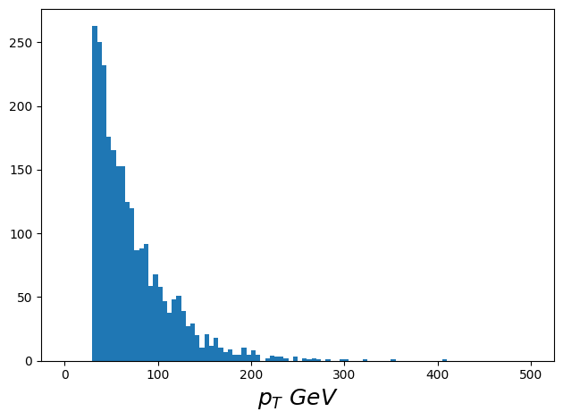
Processing the files
From what we showed you above, we define a process_file function to process the files.
The first thing it does is open the ROOT file from the files we made at the beginning. If theres no problem it prints the number of events in the file.
Then it loads the configuration that we selected above and access the required information in the dataset, for example the B-tagging variable Jet_btagDeepB.
According to the specified channel it applies the parameters for muons or electrons. Then it applies the cuts for the events, for instance filtering the transverse mass of the event.
After that we save the object we are interested in, in this case the MET of the event, using the akward library.
# ==========================================================
# Generic processing function with channel support
# ==========================================================
def process_file(filename, dataset='default', channel='muon', IS_DATA=False):
print(f"Opening...{filename}")
try:
f = uproot.open(filename)
except:
print(f"Could not open {filename}")
return None
events = f['Events']
nevents = events.num_entries
print(f"{nevents = }")
# -------------------------------
# Load channel-specific config
# -------------------------------
cfg = CONFIG[channel]
# -------------------------------
# Jets
# -------------------------------
jet_btag = events['Jet_btagDeepB'].array()
jet_jetid = events['Jet_jetId'].array()
jet_pt = events['Jet_pt'].array()
jet_eta = events['Jet_eta'].array()
jet_phi = events['Jet_phi'].array()
jet_mass = events['Jet_mass'].array()
# -------------------------------
# Electrons
# -------------------------------
electron_pt = events['Electron_pt'].array()
electron_eta = events['Electron_eta'].array()
electron_phi = events['Electron_phi'].array()
electron_mass = events['Electron_mass'].array()
electron_cutB = events['Electron_cutBased'].array()
# -------------------------------
# Muons
# -------------------------------
muon_pt = events['Muon_pt'].array()
muon_eta = events['Muon_eta'].array()
muon_phi = events['Muon_phi'].array()
muon_mass = events['Muon_mass'].array()
muon_loose = events['Muon_looseId'].array()
muon_iso = events['Muon_pfRelIso04_all'].array()
# -------------------------------
# MET
# -------------------------------
met_pt = events['MET_pt'].array()
met_eta = 0 * events['MET_pt'].array()
met_phi = events['MET_phi'].array()
# -------------------------------
# Lepton selections
# -------------------------------
if channel == "muon":
cut_muon = (
(muon_pt > cfg["MU_PT_MIN"]) &
(abs(muon_eta) < cfg["MU_ETA_MAX"]) &
(events['Muon_tightId'].array() == cfg["MU_TIGHT_ID"]) &
(muon_iso < cfg["MU_ISO_MAX"])
)
cut_one_lepton = (ak.num(muon_pt[cut_muon]) == 1)
cut_e_veto = (
(electron_pt > cfg["EL_PT_MIN"]) &
(abs(electron_eta) < cfg["EL_ETA_MAX"]) &
(electron_cutB >= cfg["EL_CUTBASED_MIN"])
)
cut_no_other = (ak.num(electron_pt[cut_e_veto]) == 0)
lep_pt_single = muon_pt[:,:1]
lep_phi_single = muon_phi[:,:1]
elif channel == "electron":
cut_electron = (
(electron_pt > cfg["EL_PT_MIN"]) &
(abs(electron_eta) < cfg["EL_ETA_MAX"]) &
(electron_cutB >= cfg["EL_CUTBASED_MIN"])
)
cut_one_lepton = (ak.num(electron_pt[cut_electron]) == 1)
cut_mu_veto = (
(muon_pt > cfg["MU_PT_MIN"]) &
(abs(muon_eta) < cfg["MU_ETA_MAX"]) &
(muon_loose == cfg["MU_LOOSE_ID"]) &
(muon_iso < cfg["MU_ISO_MAX"])
)
cut_no_other = (ak.num(muon_pt[cut_mu_veto]) == 0)
lep_pt_single = electron_pt[:,:1]
lep_phi_single = electron_phi[:,:1]
# -------------------------------
# Jets / forward jets
# -------------------------------
cut_jet = (abs(jet_eta) < JET_ETA_MAX) & (jet_pt > JET_PT_MIN) & (jet_jetid >= JET_ID_MIN)
cut_nj = ak.num(jet_pt[cut_jet]) >= MIN_NJETS
cut_bjet = (jet_btag > BTAG_WP_MED)
cut_fj = (
(jet_pt > FWD_PT_MIN) &
(abs(jet_eta) > FWD_ABS_ETA_MIN) &
(abs(jet_eta) < FWD_ABS_ETA_MAX) &
(jet_jetid >= JET_ID_MIN)
)
# -------------------------------
# Special kinematics
# -------------------------------
mT = transverse_mass(lep_pt_single, lep_phi_single, met_pt, met_phi)
cut_mtw = ak.fill_none(ak.firsts(mT > MT_MIN), False)
best_bjet_idx = ak.argmax(jet_btag, axis=1, keepdims=True)
best_bjet_pt = jet_pt[best_bjet_idx]
best_bjet_phi = jet_phi[best_bjet_idx]
mTb = transverse_mass(ak.flatten(best_bjet_pt), ak.flatten(best_bjet_phi), met_pt, met_phi)
jet1_phi = jet_phi[:, :1]
jet2_phi = jet_phi[:, 1:2]
dphi_j1 = delta_phi(jet1_phi, met_phi)
dphi_j2 = delta_phi(jet2_phi, met_phi)
min_dphi = ak.min(ak.concatenate([dphi_j1[:, None], dphi_j2[:, None]], axis=1), axis=1)
cut_mtb = mTb > MT_B_MET_MIN
cut_dphi = ak.fill_none(ak.firsts(min_dphi > DPHI_J12_MET_MIN), False)
cut_esp = cut_mtw & cut_mtb & cut_dphi
# -------------------------------
# Event-level cuts
# -------------------------------
cut_met = (met_pt > MET_MIN)
cut_base = cut_nj & cut_one_lepton & cut_no_other & cut_met & cut_esp
cut_1b = ak.count(jet_pt[cut_bjet], axis=1) == 1
cut_0fj = ak.num(jet_pt[cut_fj]) == 0
cut1 = cut_base & cut_1b & cut_0fj
cut_full_event = cut1
if IS_DATA:
mask_lumi = build_lumi_mask('Cert_271036-284044_13TeV_Legacy2016_Collisions16_JSON.txt', events)
cut_full_event = cut1 & mask_lumi
# -------------------------------
# Build output objects
# -------------------------------
met = ak.zip(
{"pt": met_pt[cut_full_event],
"eta": met_eta[cut_full_event],
"phi": met_phi[cut_full_event],
"mass": 0},
with_name="Momentum4D",
)
if channel == "muon":
lep = ak.zip(
{"pt": muon_pt[cut_full_event][cut_muon[cut_full_event]],
"eta": muon_eta[cut_full_event][cut_muon[cut_full_event]],
"phi": muon_phi[cut_full_event][cut_muon[cut_full_event]],
"mass": muon_mass[cut_full_event][cut_muon[cut_full_event]]},
with_name="Momentum4D",
)
else:
lep = ak.zip(
{"pt": electron_pt[cut_full_event][cut_electron[cut_full_event]],
"eta": electron_eta[cut_full_event][cut_electron[cut_full_event]],
"phi": electron_phi[cut_full_event][cut_electron[cut_full_event]],
"mass": electron_mass[cut_full_event][cut_electron[cut_full_event]]},
with_name="Momentum4D",
)
# -------------------------------
# Weights / pileup
# -------------------------------
N_gen, gw_pos, gw_neg = -999, -999, -999
tmpval_events = np.ones(len(ak.flatten(met.pt, axis=None)))
tmpval = ak.ones_like(ak.flatten(met.pt, axis=None))
if not IS_DATA:
gen_weights = events['genWeight'].array()[cut_full_event]
pileup = events['Pileup_nTrueInt'].array()[cut_full_event]
if len(gen_weights) != len(tmpval):
gen_weights = ak.flatten(gen_weights, axis=None)
pileup = ak.flatten(pileup, axis=None)
gen_weights_per_candidate = tmpval * gen_weights
pileup_per_candidate = tmpval * pileup
gen_weights_org = events['genWeight'].array()
gw_pos = ak.count(gen_weights_org[gen_weights_org > 0])
gw_neg = ak.count(gen_weights_org[gen_weights_org < 0])
N_gen = gw_pos - gw_neg
else:
pileup_per_candidate = -999 * tmpval
gen_weights_per_candidate = -999 * tmpval
# -------------------------------
# Save to DataFrame
# -------------------------------
mydict = {
'met_pt': ak.flatten(met.pt, axis=None),
'lep_pt': ak.flatten(lep.pt, axis=None),
'pileup': pileup_per_candidate,
'weight': gen_weights_per_candidate,
'nevents': nevents * tmpval_events,
'N_gen': N_gen * tmpval_events,
'gw_pos': gw_pos * tmpval_events,
'gw_neg': gw_neg * tmpval_events
}
df = pd.DataFrame.from_dict(mydict)
outfilename = f"OUTPUT_{dataset}_{channel}_{filename.split('/')[-1].split('.')[0]}.csv"
print(f"Saving output to {outfilename}")
df.to_csv(outfilename, index=False)
return df
To simplify the selection of the channel, we have created two functions using the process_file function and assigning them a specific channel.
# ==========================================================
# Processing function for single-muon channel
# ==========================================================
def process_file_muon(filename, dataset='default', IS_DATA=False):
return process_file(filename, dataset=dataset, channel="muon", IS_DATA=IS_DATA)
# ==========================================================
# Processing function for single-electron channel
# ==========================================================
def process_file_electron(filename, dataset='default', IS_DATA=False):
return process_file(filename, dataset=dataset, channel="electron", IS_DATA=IS_DATA)
Now we can use these functions to process some data
dataset = "ttsemilep"
filenames = get_files_for_dataset(dataset, random=True, n=1) # por ejemplo
for filename in filenames:
df = process_file_muon(filename, dataset=dataset, IS_DATA=False)
Opening...root://eospublic.cern.ch//eos/opendata/cms/mc/RunIISummer20UL16NanoAODv9/TTToSemiLeptonic_TuneCP5_13TeV-powheg-pythia8/NANOAODSIM/106X_mcRun2_asymptotic_v17-v1/120000/301EA765-5A14-1B43-ADED-D3BE6147134B.root
nevents = 905000
Saving output to OUTPUT_ttsemilep_muon_301EA765-5A14-1B43-ADED-D3BE6147134B.csv
dataset = "ttsemilep"
filenames = get_files_for_dataset(dataset, random=True, n=1)
for filename in filenames:
df = process_file_electron(filename, dataset=dataset, IS_DATA=False)
Opening...root://eospublic.cern.ch//eos/opendata/cms/mc/RunIISummer20UL16NanoAODv9/TTToSemiLeptonic_TuneCP5_13TeV-powheg-pythia8/NANOAODSIM/106X_mcRun2_asymptotic_v17-v1/120000/581CBD80-7D60-5E42-9952-B1234440AE4F.root
nevents = 336000
Saving output to OUTPUT_ttsemilep_electron_581CBD80-7D60-5E42-9952-B1234440AE4F.csv
#channel muón
dataset = "collsm" # SingleMuon data
files = get_files_for_dataset(dataset, random=True, n=1)
for f in files:
df_data_mu = process_file_muon(f, dataset=dataset, IS_DATA=True)
Opening...root://eospublic.cern.ch//eos/opendata/cms/Run2016H/SingleMuon/NANOAOD/UL2016_MiniAODv2_NanoAODv9-v1/70000/01479010-3B51-B04A-9C5C-7800085D11B8.root
nevents = 887639
Saving output to OUTPUT_collsm_muon_01479010-3B51-B04A-9C5C-7800085D11B8.csv
#channel electrón
dataset = "collse" # SingleElectron data
files = get_files_for_dataset(dataset, random=True, n=1)
for f in files:
df_data_el = process_file_electron(f, dataset=dataset, IS_DATA=True)
Opening...root://eospublic.cern.ch//eos/opendata/cms/Run2016H/SingleElectron/NANOAOD/UL2016_MiniAODv2_NanoAODv9-v1/270000/0D3360E0-CCE2-3543-A953-620C362B10C2.root
nevents = 864865
Saving output to OUTPUT_collse_electron_0D3360E0-CCE2-3543-A953-620C362B10C2.csv
As there are lots of datasets, we are going to add them to a single file.
In order to do that we are going to need a list of datasets and channels.
import glob
import os
import pandas as pd
datasets = ['ttsemilep', 'collsm','collse'] # MC and data
channels = ['muon', 'electron'] # both channels
for dataset in datasets:
for channel in channels:
path = './'
all_files = glob.glob(os.path.join(path, f"OUTPUT_{dataset}_{channel}_*.csv"))
print(f"Found {len(all_files)} files for {dataset} ({channel})")
if len(all_files) == 0:
print(f"No files found for {dataset} ({channel}), skipping.")
continue
dfs = [pd.read_csv(f) for f in all_files]
df = pd.concat(dfs, ignore_index=True)
# Recalcular totales
N_gen = df['N_gen'].iloc[0]
nevents = df['nevents'].iloc[0]
df['N_gen'] = N_gen
df['nevents'] = nevents
outname = f"SUMMED_{dataset}_{channel}.csv"
df.to_csv(outname, index=False)
print(f"Saved {outname}")
Found 1 files for ttsemilep (muon)
Saved SUMMED_ttsemilep_muon.csv
Found 1 files for ttsemilep (electron)
Saved SUMMED_ttsemilep_electron.csv
Found 1 files for collsm (muon)
Saved SUMMED_collsm_muon.csv
Found 0 files for collsm (electron)
No files found for collsm (electron), skipping.
Found 0 files for collse (muon)
No files found for collse (muon), skipping.
Found 1 files for collse (electron)
Saved SUMMED_collse_electron.csv
Now we can access the data and plot it as you can see below
import matplotlib.pyplot as plt
df_mu = pd.read_csv("SUMMED_ttsemilep_muon.csv")
df_el = pd.read_csv("SUMMED_ttsemilep_electron.csv")
plt.hist(df_mu['lep_pt'], bins=30, range=(0,300), histtype="step", label="Muon channel")
plt.hist(df_el['lep_pt'], bins=30, range=(0,300), histtype="step", label="Electron channel")
plt.xlabel("Lepton $p_T$ [GeV]")
plt.ylabel("Events")
plt.legend()
plt.show()
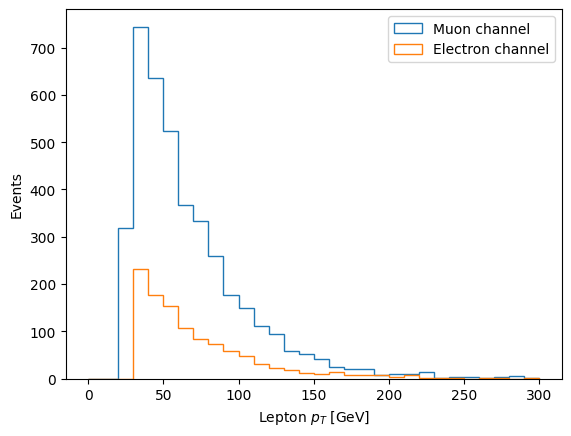
import matplotlib.pyplot as plt
df_mu = pd.read_csv("SUMMED_ttsemilep_muon.csv")
df_el = pd.read_csv("SUMMED_ttsemilep_electron.csv")
plt.hist(df_mu['met_pt'], bins=30, range=(0,300), histtype="step", label="Muon channel")
plt.hist(df_el['met_pt'], bins=30, range=(0,300), histtype="step", label="Electron channel")
plt.xlabel("Lepton $met$ [GeV]")
plt.ylabel("Events")
plt.legend()
plt.show()
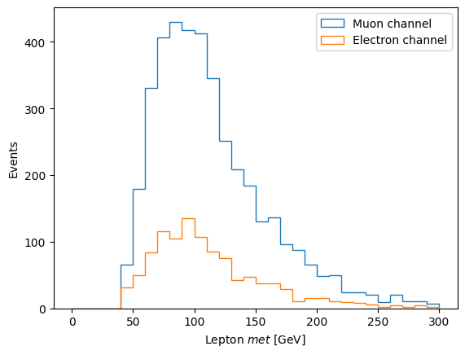
# Cargar Data y MC
df_data_mu = pd.read_csv("SUMMED_collsm_muon.csv")
df_mc_mu = pd.read_csv("SUMMED_ttsemilep_muon.csv")
df_data_el = pd.read_csv("SUMMED_collse_electron.csv")
df_mc_el = pd.read_csv("SUMMED_ttsemilep_electron.csv")
# Shapes normalizados (misma área)
plt.figure(figsize=(12,5))
plt.subplot(1,2,1)
plt.hist(df_mc_mu['lep_pt'], bins=30, range=(0,300), density=True,
histtype="step", label="MC (shape)")
plt.hist(df_data_mu['lep_pt'], bins=30, range=(0,300), density=True,
histtype="step", label="Data (shape)")
plt.xlabel("Muon $p_T$ [GeV]"); plt.ylabel("Normalized")
plt.legend()
plt.subplot(1,2,2)
plt.hist(df_mc_el['lep_pt'], bins=30, range=(0,300), density=True,
histtype="step", label="MC (shape)")
plt.hist(df_data_el['lep_pt'], bins=30, range=(0,300), density=True,
histtype="step", label="Data (shape)")
plt.xlabel("Electron $p_T$ [GeV]"); plt.ylabel("Normalized")
plt.legend()
plt.tight_layout(); plt.show()
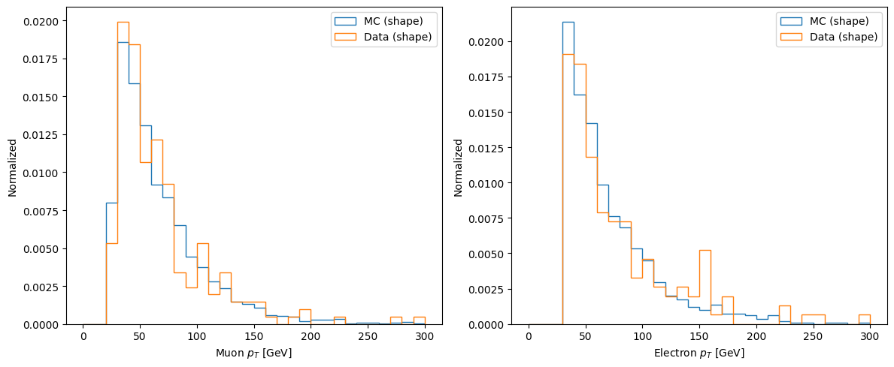
# Shapes normalizados (misma área)
plt.figure(figsize=(12,5))
plt.subplot(1,2,1)
plt.hist(df_mc_mu['met_pt'], bins=30, range=(0,300), density=True,
histtype="step", label="MC (shape)")
plt.hist(df_data_mu['met_pt'], bins=30, range=(0,300), density=True,
histtype="step", label="Data (shape)")
plt.xlabel("Muon $p_T$ [GeV]"); plt.ylabel("Normalized")
plt.legend()
plt.subplot(1,2,2)
plt.hist(df_mc_el['met_pt'], bins=30, range=(0,300), density=True,
histtype="step", label="MC (shape)")
plt.hist(df_data_el['met_pt'], bins=30, range=(0,300), density=True,
histtype="step", label="Data (shape)")
plt.xlabel("Electron $p_T$ [GeV]"); plt.ylabel("Normalized")
plt.legend()
plt.tight_layout(); plt.show()
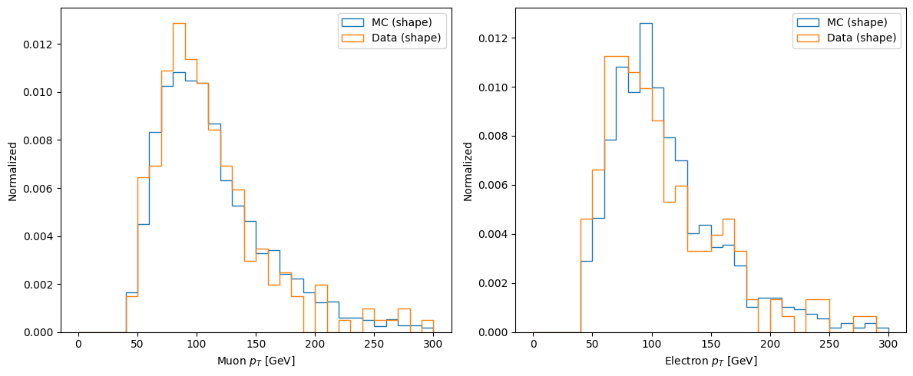
Here we want to get ahead with the normalization, so that we can also compare shapes and see the value of the luminosity, which clearly should go with a dataset. This is just a preliminary step; it will be explained in more detail later because of the normalization.--Ignore
import matplotlib.pyplot as plt
# Cargar Data y MC
df_data_mu = pd.read_csv("SUMMED_collsm_muon.csv")
df_mc_mu = pd.read_csv("SUMMED_ttsemilep_muon.csv")
df_data_el = pd.read_csv("SUMMED_collse_electron.csv")
df_mc_el = pd.read_csv("SUMMED_ttsemilep_electron.csv")
# Parámetros físicos
integrated_luminosity = 60.0 # fb^-1 (ejemplo, dataset pequeño)
xsec_ttsemilep = 831.76 # pb (aprox.)
# Calcular pesos MC
N_gen_mc_mu = df_mc_mu['N_gen'][0]
N_gen_mc_el = df_mc_el['N_gen'][0]
weight_mc_mu = integrated_luminosity * xsec_ttsemilep / N_gen_mc_mu
weight_mc_el = integrated_luminosity * xsec_ttsemilep / N_gen_mc_el
# ========================
# Plots
# ========================
plt.figure(figsize=(12,5))
# Muon channel
plt.subplot(1,2,1)
plt.hist(df_mc_mu['lep_pt'], bins=30, range=(0,300),
weights=[weight_mc_mu]*len(df_mc_mu), alpha=0.5, label="MC ttsemilep")
plt.hist(df_data_mu['lep_pt'], bins=30, range=(0,300),
histtype="step", color="k", label="Data (SingleMuon)")
plt.xlabel("Muon $p_T$ [GeV]")
plt.ylabel("Events")
plt.legend()
# Electron channel
plt.subplot(1,2,2)
plt.hist(df_mc_el['lep_pt'], bins=30, range=(0,300),
weights=[weight_mc_el]*len(df_mc_el), alpha=0.5, label="MC ttsemilep")
plt.hist(df_data_el['lep_pt'], bins=30, range=(0,300),
histtype="step", color="k", label="Data (SingleElectron)")
plt.xlabel("Electron $p_T$ [GeV]")
plt.ylabel("Events")
plt.legend()
plt.tight_layout()
plt.savefig("lep_pt_data_vs_mc.png")
plt.show()
/tmp/ipykernel_116/3175142839.py:50: UserWarning: The figure layout has changed to tight
plt.tight_layout()
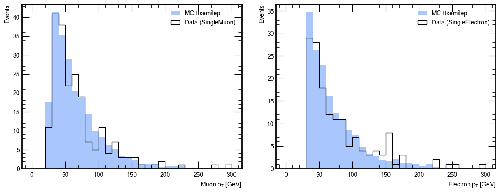
import matplotlib.pyplot as plt
# Cargar Data y MC
df_data_mu = pd.read_csv("SUMMED_collsm_muon.csv")
df_mc_mu = pd.read_csv("SUMMED_ttsemilep_muon.csv")
df_data_el = pd.read_csv("SUMMED_collse_electron.csv")
df_mc_el = pd.read_csv("SUMMED_ttsemilep_electron.csv")
# Parámetros físicos
integrated_luminosity = 60.0 # pb^-1 (ejemplo, dataset pequeño)
xsec_ttsemilep = 831.76 # pb (aprox.)
# Calcular pesos MC
N_gen_mc_mu = df_mc_mu['N_gen'][0]
N_gen_mc_el = df_mc_el['N_gen'][0]
weight_mc_mu = integrated_luminosity * xsec_ttsemilep / N_gen_mc_mu
weight_mc_el = integrated_luminosity * xsec_ttsemilep / N_gen_mc_el
# ========================
# Plots
# ========================
plt.figure(figsize=(12,5))
# Muon channel
plt.subplot(1,2,1)
plt.hist(df_mc_mu['met_pt'], bins=30, range=(0,300),
weights=[weight_mc_mu]*len(df_mc_mu), alpha=0.5, label="MC ttsemilep")
plt.hist(df_data_mu['met_pt'], bins=30, range=(0,300),
histtype="step", color="k", label="Data (SingleMuon)")
plt.xlabel("Muon $met$ [GeV]")
plt.ylabel("Events")
plt.legend()
# Electron channel
plt.subplot(1,2,2)
plt.hist(df_mc_el['met_pt'], bins=30, range=(0,300),
weights=[weight_mc_el]*len(df_mc_el), alpha=0.5, label="MC ttsemilep")
plt.hist(df_data_el['met_pt'], bins=30, range=(0,300),
histtype="step", color="k", label="Data (SingleElectron)")
plt.xlabel("Electron $met$ [GeV]")
plt.ylabel("Events")
plt.legend()
plt.tight_layout()
plt.show()
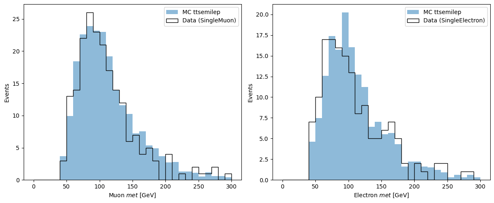
To process all available data sets
Muon
# ==========================
# Process all datasets (muon channel)
# ==========================
#datasets = ['collsm', 'ttsemilep', 'ttop', 'ttv', 'Wjets']
datasets = ['ttop', 'ttv', 'Wjets']
for dataset in datasets:
IS_DATA = dataset.startswith("coll") # True for collision data, False for MC
filenames = get_files_for_dataset(dataset, random=True, n=1) # adjust n as needed
print(f"Processing {len(filenames)} files for {dataset} (muon channel)")
for filename in filenames:
df_mu = process_file_muon(filename, dataset=dataset, IS_DATA=IS_DATA)
Processing 1 files for ttop (muon channel)
Opening...root://eospublic.cern.ch//eos/opendata/cms/mc/RunIISummer20UL16NanoAODv9/ST_t-channel_top_4f_InclusiveDecays_TuneCP5CR2_13TeV-powheg-madspin-pythia8/NANOAODSIM/106X_mcRun2_asymptotic_v17-v1/2500000/C7DFF052-C1CD-6747-AAD5-73AA56AD82CB.root
nevents = 895000
Saving output to OUTPUT_ttop_muon_C7DFF052-C1CD-6747-AAD5-73AA56AD82CB.csv
Processing 1 files for ttv (muon channel)
Opening...root://eospublic.cern.ch//eos/opendata/cms/mc/RunIISummer20UL16NanoAODv9/TTWJetsToLNu_TuneCP5_13TeV-amcatnloFXFX-madspin-pythia8/NANOAODSIM/106X_mcRun2_asymptotic_v17-v1/270000/FD0364C0-B9CF-9C43-ADE8-A950A91D5A8D.root
nevents = 673411
Saving output to OUTPUT_ttv_muon_FD0364C0-B9CF-9C43-ADE8-A950A91D5A8D.csv
Processing 1 files for Wjets (muon channel)
Opening...root://eospublic.cern.ch//eos/opendata/cms/mc/RunIISummer20UL16NanoAODv9/WJetsToLNu_HT-400To600_TuneCP5_13TeV-madgraphMLM-pythia8/NANOAODSIM/106X_mcRun2_asymptotic_v17-v1/280000/216B70A2-8211-2B4E-8B82-F3CB8F097641.root
nevents = 197244
Saving output to OUTPUT_Wjets_muon_216B70A2-8211-2B4E-8B82-F3CB8F097641.csv
Electron
# ==========================
# Process all datasets (electron channel)
# ==========================
#datasets = ['collse', 'ttsemilep', 'ttop', 'ttv', 'Wjets']
datasets = ['ttop', 'ttv', 'Wjets']
for dataset in datasets:
IS_DATA = dataset.startswith("coll")
filenames = get_files_for_dataset(dataset, random=True, n=1)
print(f" Processing {len(filenames)} files for {dataset} (electron channel)")
for filename in filenames:
df_el = process_file_electron(filename, dataset=dataset, IS_DATA=IS_DATA)
Processing 1 files for ttop (electron channel)
Opening...root://eospublic.cern.ch//eos/opendata/cms/mc/RunIISummer20UL16NanoAODv9/ST_t-channel_top_4f_InclusiveDecays_TuneCP5CR2_13TeV-powheg-madspin-pythia8/NANOAODSIM/106X_mcRun2_asymptotic_v17-v1/2500000/46E58BC2-6B38-1845-BE51-0C65F7D8CDB6.root
nevents = 1241000
Saving output to OUTPUT_ttop_electron_46E58BC2-6B38-1845-BE51-0C65F7D8CDB6.csv
Processing 1 files for ttv (electron channel)
Opening...root://eospublic.cern.ch//eos/opendata/cms/mc/RunIISummer20UL16NanoAODv9/TTWJetsToLNu_TuneCP5_13TeV-amcatnloFXFX-madspin-pythia8/NANOAODSIM/106X_mcRun2_asymptotic_v17-v1/130000/C6039E7C-9B89-F84E-A1BE-309DD4A34153.root
nevents = 272723
Saving output to OUTPUT_ttv_electron_C6039E7C-9B89-F84E-A1BE-309DD4A34153.csv
Processing 1 files for Wjets (electron channel)
Opening...root://eospublic.cern.ch//eos/opendata/cms/mc/RunIISummer20UL16NanoAODv9/WJetsToLNu_HT-400To600_TuneCP5_13TeV-madgraphMLM-pythia8/NANOAODSIM/106X_mcRun2_asymptotic_v17-v1/120000/30407250-6834-4642-AD3A-0AB0D1F9E639.root
nevents = 41364
Saving output to OUTPUT_Wjets_electron_30407250-6834-4642-AD3A-0AB0D1F9E639.csv
Uniting the two
import glob
import os
import pandas as pd
datasets = ['collse', 'collsm', 'ttsemilep', 'ttop', 'ttv', 'Wjets']
channels = ['muon', 'electron'] # ensure we split per channel
for dataset in datasets:
for channel in channels:
N_gen = 0
nevents = 0
gw_pos = 0
gw_neg = 0
IS_COLLISION = dataset.startswith("coll")
path = './'
all_files = glob.glob(os.path.join(path, f"OUTPUT_{dataset}_{channel}_*.csv"))
print(f"🔎 Processing {len(all_files)} files in {dataset} ({channel})")
if len(all_files) == 0:
print(f"⚠️No files found for {dataset} ({channel}), skipping.")
continue
list_of_dataframes = []
for filename in all_files:
df = pd.read_csv(filename, index_col=None, header=0)
list_of_dataframes.append(df)
if len(df) > 0:
N_gen += df['N_gen'][0]
nevents += df['nevents'][0]
gw_pos += df['gw_pos'][0]
gw_neg += df['gw_neg'][0]
# For real collision data we don’t use MC weights
if IS_COLLISION:
N_gen = -999
gw_pos = -999
gw_neg = -999
df = pd.concat(list_of_dataframes, axis=0, ignore_index=True)
df['N_gen'] = N_gen
df['nevents'] = nevents
df['gw_pos'] = gw_pos
df['gw_neg'] = gw_neg
outname = f"SUMMED_{dataset}_{channel}.csv"
df.to_csv(outname, index=False)
print(f"✅ Saved {outname}")
🔎 Processing 0 files in collse (muon)
⚠️No files found for collse (muon), skipping.
🔎 Processing 1 files in collse (electron)
✅ Saved SUMMED_collse_electron.csv
🔎 Processing 1 files in collsm (muon)
✅ Saved SUMMED_collsm_muon.csv
🔎 Processing 0 files in collsm (electron)
⚠️No files found for collsm (electron), skipping.
🔎 Processing 1 files in ttsemilep (muon)
✅ Saved SUMMED_ttsemilep_muon.csv
🔎 Processing 1 files in ttsemilep (electron)
✅ Saved SUMMED_ttsemilep_electron.csv
🔎 Processing 1 files in ttop (muon)
✅ Saved SUMMED_ttop_muon.csv
🔎 Processing 1 files in ttop (electron)
✅ Saved SUMMED_ttop_electron.csv
🔎 Processing 1 files in ttv (muon)
✅ Saved SUMMED_ttv_muon.csv
🔎 Processing 1 files in ttv (electron)
✅ Saved SUMMED_ttv_electron.csv
🔎 Processing 1 files in Wjets (muon)
✅ Saved SUMMED_Wjets_muon.csv
🔎 Processing 1 files in Wjets (electron)
✅ Saved SUMMED_Wjets_electron.csv
Why Normalization is Necessary
When comparing data and Monte Carlo (MC) simulations, the raw event counts are not directly comparable:
- Data:
- Events are collected with a detector during a given time period.
- The "size" of the dataset is controlled by the integrated luminosity (L).
- Example: UL2016 SingleMuon dataset corresponds to ~35.9 fb⁻¹.
-
There is no cross section attached — it is just what was recorded.
-
MC (simulations):
- Each simulated dataset corresponds to a particular physics process (e.g. t t̄, W+jets).
- Generators simulate a finite number of events (N₍gen₎) with a known theoretical cross section (σ).
- By construction, MC samples may represent more or fewer events than what would be seen in real data.
- Therefore, they must be scaled.
The Normalization Formula
To make MC comparable to data, we apply a per-event weight:
Where:
- σ (pb) = process cross section (from theory/measurements).
- L (fb⁻¹) = integrated luminosity of the data sample.
- Convert to pb⁻¹ by multiplying by 1000.
- N₍gen₎ = total number of generated MC events (before cuts).
This weight ensures that when we sum the MC events after applying cuts, the histograms reflect the expected yield in the same luminosity as the data.
Why it Matters
- Without normalization, MC histograms are arbitrary and cannot be compared to data.
- After normalization, MC yields represent the expected number of events under the Standard Model.
- This allows us to:
- Compare data vs MC in control regions.
- Estimate backgrounds in signal regions.
- Search for discrepancies that may indicate new physics (e.g. Dark Matter).
Define Cross-Sections
For each simulated process (MC), we need the theoretical cross section (σ) in pb.
This will later be combined with the luminosity (L) and the number of generated events (N_gen) to normalize MC histograms.
- Data samples (SingleMuon, MET, …) have no cross section.
- MC samples (ttbar, W+jets, dibosons, …) each get a σ value.
Below is a table of cross-sections (UL2016, approximate values).
import pandas as pd
integrated_luminosity = 60.0 # * 1000.0 # convert fb^-1 to pb^-1 and nd we have no idea of the value of this
xsecs = {
"Wjets": 45.21,
"ttsemilep": 831.76,
"ttv": 0.2151,
"ttop": 113.4,
}
datasets = ['collse', 'collsm', 'ttsemilep', 'ttop', 'ttv', 'Wjets']
channels = ['muon', 'electron']
# Diccionario para guardar los pesos
weights = {}
print("\n=== Weights per dataset/channel ===")
for dataset in datasets:
for channel in channels:
try:
df = pd.read_csv(f"SUMMED_{dataset}_{channel}.csv")
except FileNotFoundError:
continue
N_gen = df['N_gen'][0]
if dataset.startswith("coll"):
weight = 1.0
elif dataset in xsecs:
xsec = xsecs[dataset]
weight = integrated_luminosity * xsec / N_gen
else:
print(f"No xsec for {dataset}, skipping...")
continue
key = f"{dataset}_{channel}"
weights[key] = weight
print(f"{key:20s} weight = {weight:.4f}")
=== Weights per dataset/channel ===
collse_electron weight = 1.0000
collsm_muon weight = 1.0000
ttsemilep_muon weight = 0.0556
ttsemilep_electron weight = 0.1498
ttop_muon weight = 0.0081
ttop_electron weight = 0.0059
ttv_muon weight = 0.0000
ttv_electron weight = 0.0001
Wjets_muon weight = 0.0138
Wjets_electron weight = 0.0656
# ================== CMS STYLE CONFIG ==================
import matplotlib.pyplot as plt
import mplhep as hep
# Use CMS style from mplhep
plt.style.use(hep.style.CMS)
# ---- global style tweaks ----
plt.rcParams.update({
"axes.titlesize": 10,
"axes.labelsize": 10,
"xtick.labelsize": 10,
"ytick.labelsize": 10,
"legend.fontsize": 10,
"figure.constrained_layout.use": True, # avoid tight_layout warning
})
from hist import Hist
import pandas as pd
import matplotlib.pyplot as plt
import mplhep as hep
import numpy as np
# Build histogram for muon channel
h_mu = (
Hist.new.Reg(20, 0, 500, name="met_pt", label=r"$p_T^{miss}$ [GeV]")
.StrCat([], name="dataset", label="dataset", growth=True)
.Weight()
)
datasets_muon = ["collsm", "ttsemilep", "ttop", "ttv", "Wjets"]
collision_muon = ["collsm"]
background_muon = ["ttsemilep", "ttop", "ttv", "Wjets"]
for dataset in datasets_muon:
try:
df = pd.read_csv(f"SUMMED_{dataset}_muon.csv")
except FileNotFoundError:
print(f"Missing file SUMMED_{dataset}_muon.csv, skipping")
continue
vals = df["met_pt"].values
key = f"{dataset}_muon"
weight = weights[key]
h_mu.fill(met_pt=vals, dataset=dataset, weight=weight)
# ---------- Plot ----------
fig, (ax, rax) = plt.subplots(
2, 1, gridspec_kw=dict(height_ratios=[3, 1], hspace=0.05),
sharex=True, figsize=(7, 6)
)
hep.cms.label("Open Data", ax=ax, data=True, lumi=0.169, year=2016, fontsize=12)
# Stack MC
h_mu[:, background_muon].stack("dataset")[:].project("met_pt").plot(
ax=ax, stack=True, histtype="fill"
)
# Overlay Data
h_mu[:, collision_muon].project("met_pt").plot(
ax=ax, histtype="errorbar", color="k", markersize=6, label="Data"
)
ax.set_ylabel("Events")
ax.set_title("Single-Muon channel")
ax.legend()
# ---------- Ratio plot ----------
Hdata = h_mu[:, collision_muon].project("met_pt")
Hmc = h_mu[:, background_muon].project("met_pt")
centers = 0.5 * (Hdata.axes[0].edges[:-1] + Hdata.axes[0].edges[1:])
data_vals = Hdata.values()
mc_vals = Hmc.values()
ratio = np.divide(data_vals, mc_vals, out=np.zeros_like(data_vals, dtype=float), where=mc_vals > 0)
err = np.divide(np.sqrt(data_vals), mc_vals, out=np.zeros_like(data_vals, dtype=float), where=mc_vals > 0)
rax.errorbar(centers, ratio, yerr=err, fmt="o", color="k")
rax.axhline(1.0, ls="--", color="k")
rax.set_ylabel("Data/MC")
rax.set_xlabel(r"$p_T^{miss}$ [GeV]")
rax.set_ylim(0.5, 1.5)
ax.set_xlim(0, 300)
rax.set_xlim(0, 300)
plt.show()
/usr/local/venv/lib/python3.10/site-packages/hist/basehist.py:480: UserWarning: List indexing selection is experimental. Removed bins are not placed in overflow.
return super().__getitem__(self._index_transform(index))
/usr/local/venv/lib/python3.10/site-packages/hist/basehist.py:480: UserWarning: List indexing selection is experimental. Removed bins are not placed in overflow.
return super().__getitem__(self._index_transform(index))
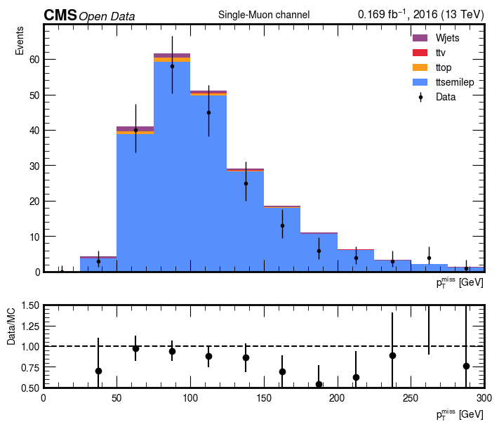
# Build histogram for electron channel
h_el = (
Hist.new.Reg(20, 0, 500, name="met_pt", label=r"$p_T^{miss}$ [GeV]")
.StrCat([], name="dataset", label="dataset", growth=True)
.Weight()
)
datasets_electron = ["collse", "ttsemilep", "ttop", "ttv", "Wjets"]
collision_electron = ["collse"]
background_electron = ["ttsemilep", "ttop", "ttv", "Wjets"]
for dataset in datasets_electron:
try:
df = pd.read_csv(f"SUMMED_{dataset}_electron.csv")
except FileNotFoundError:
print(f"Missing file SUMMED_{dataset}_electron.csv, skipping")
continue
vals = df["met_pt"].values
key = f"{dataset}_electron"
weight = weights[key]
h_el.fill(met_pt=vals, dataset=dataset, weight=weight)
# ---------- Plot ----------
fig, (ax, rax) = plt.subplots(
2, 1, gridspec_kw=dict(height_ratios=[3, 1], hspace=0.05),
sharex=True, figsize=(7, 6)
)
hep.cms.label(
"Open Data",
ax=ax,
data=True,
lumi=0.169,
year=2016,
fontsize=12
)
# Stack MC
h_el[:, background_electron].stack("dataset")[:].project("met_pt").plot(
ax=ax, stack=True, histtype="fill"
)
# Overlay Data
h_el[:, collision_electron].project("met_pt").plot(
ax=ax, histtype="errorbar", color="k", markersize=6, label="Data"
)
ax.set_ylabel("Events")
ax.set_title("Single-Electron channel")
ax.legend()
# ---------- Ratio plot ----------
Hdata = h_el[:, collision_electron].project("met_pt")
Hmc = h_el[:, background_electron].project("met_pt")
centers = 0.5 * (Hdata.axes[0].edges[:-1] + Hdata.axes[0].edges[1:])
data_vals = Hdata.values()
mc_vals = Hmc.values()
ratio = np.divide(data_vals, mc_vals, out=np.zeros_like(data_vals, dtype=float), where=mc_vals > 0)
err = np.divide(np.sqrt(data_vals), mc_vals, out=np.zeros_like(data_vals, dtype=float), where=mc_vals > 0)
rax.errorbar(centers, ratio, yerr=err, fmt="o", color="k")
rax.axhline(1.0, ls="--", color="k")
rax.set_ylabel("Data/MC")
rax.set_xlabel(r"$p_T^{miss}$ [GeV]")
rax.set_ylim(0.5, 1.5)
ax.set_xlim(0, 300)
rax.set_xlim(0, 300)
plt.show()
/usr/local/venv/lib/python3.10/site-packages/hist/basehist.py:480: UserWarning: List indexing selection is experimental. Removed bins are not placed in overflow.
return super().__getitem__(self._index_transform(index))
/usr/local/venv/lib/python3.10/site-packages/hist/basehist.py:480: UserWarning: List indexing selection is experimental. Removed bins are not placed in overflow.
return super().__getitem__(self._index_transform(index))
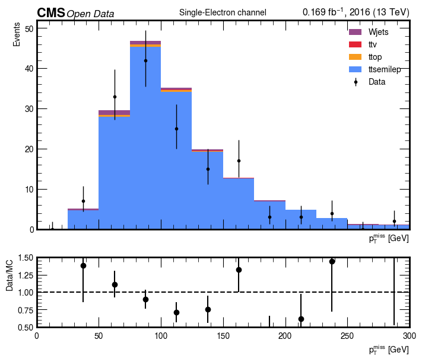